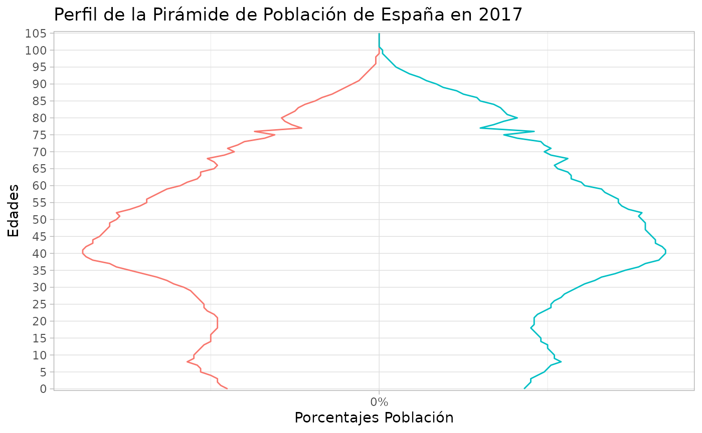
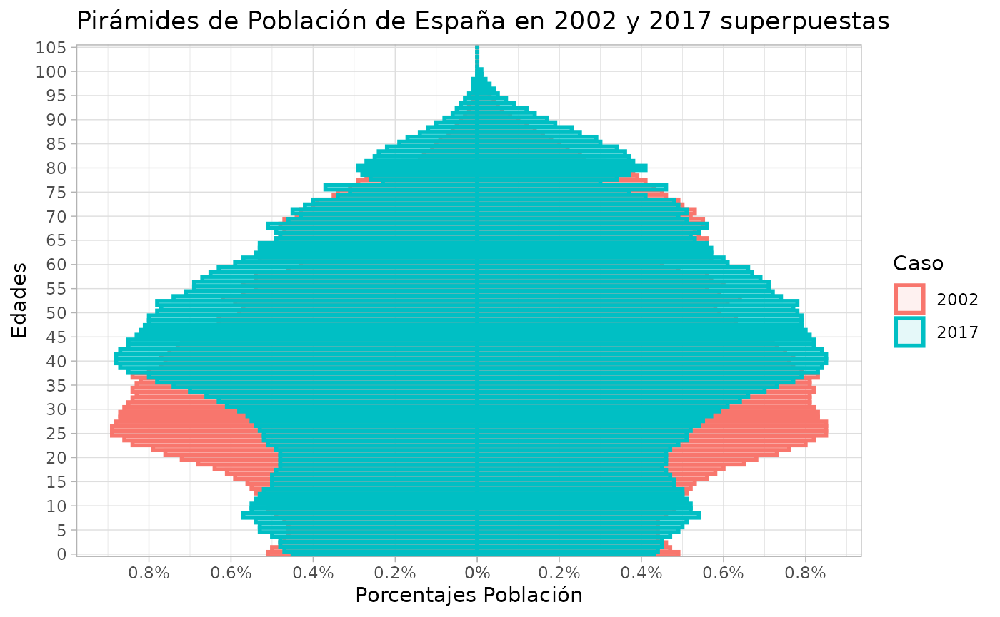
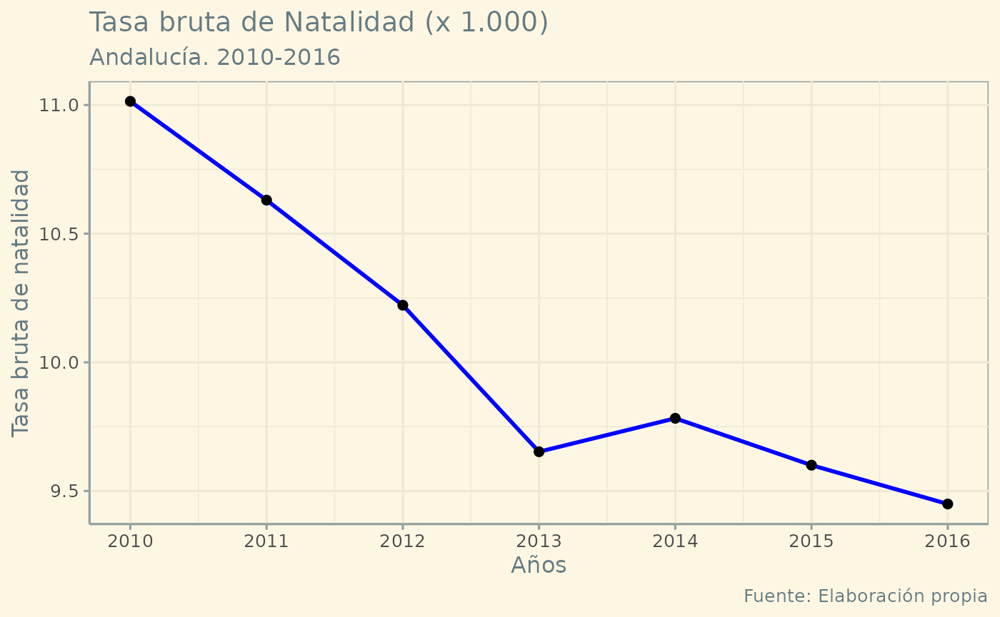
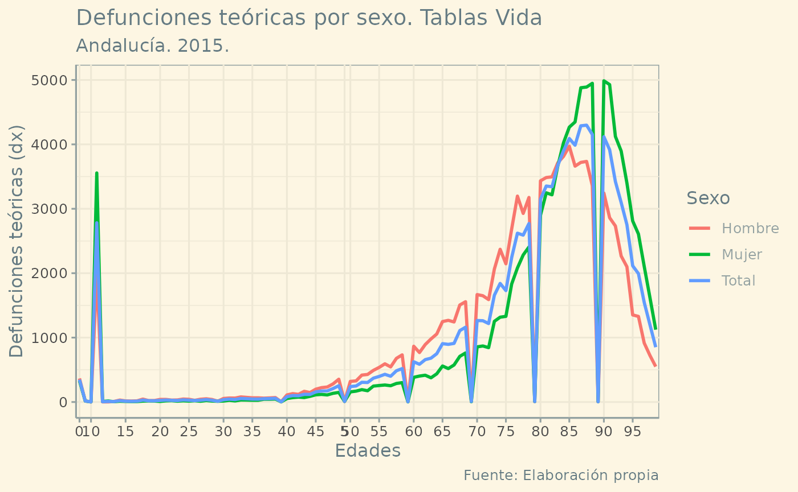
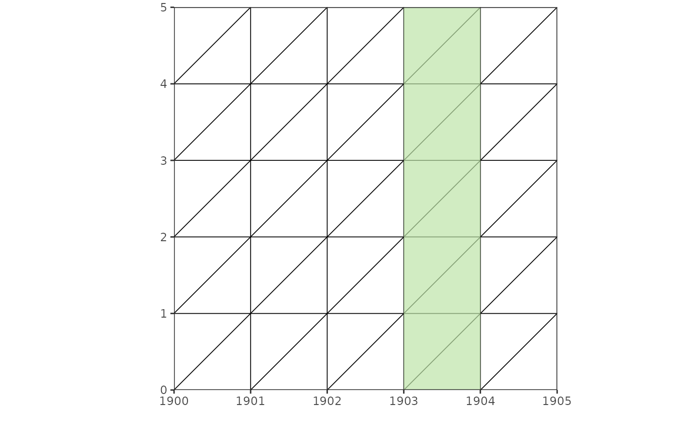
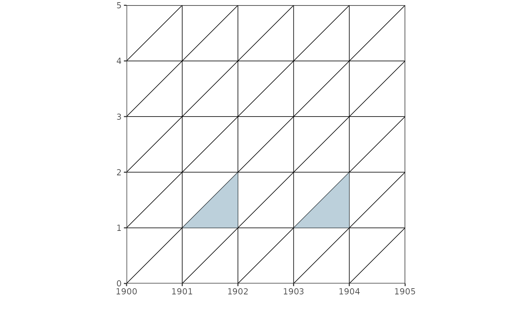
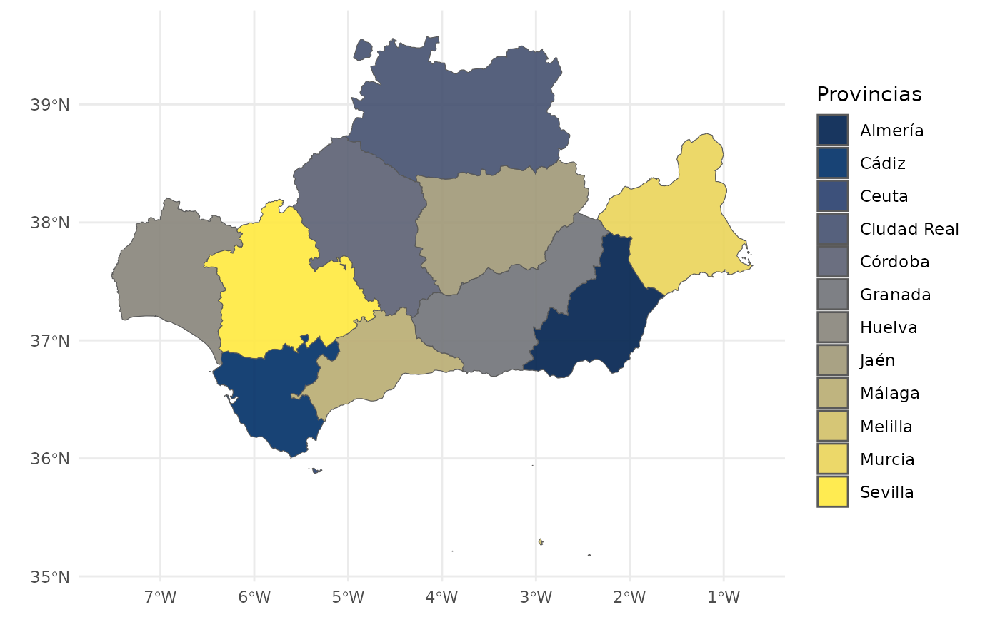
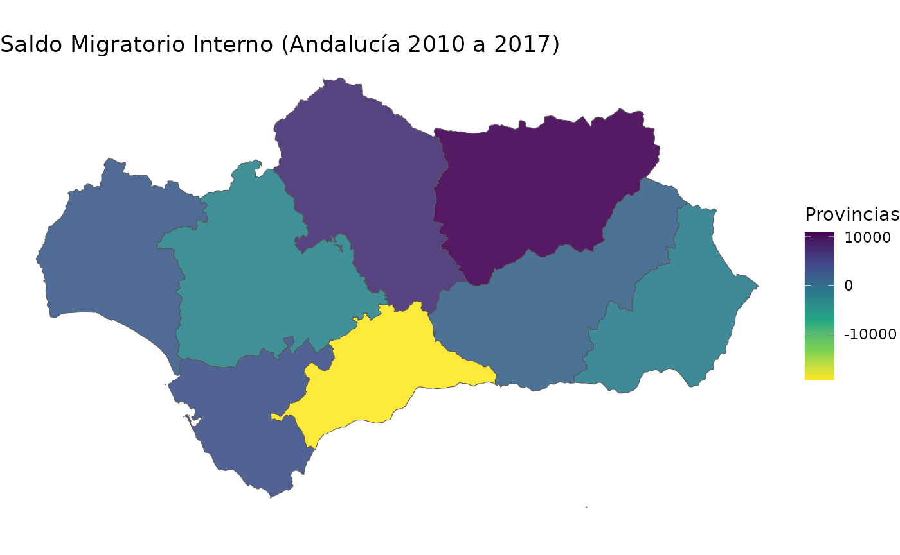

Instalation
# Instalar el paquete desde GitHub
install.packages("remotes")
remotes::install_github("calote/DemographyBasic")Use
#library(DemographyBasic)
suppressWarnings(suppressMessages(library(DemographyBasic)))Example lifetable
This is a basic example which shows you how to solve a common problem:
library(DemographyBasic)
(mx0 = 1733/441881) # TMI = D^t_0/N^t
#> [1] 0.00392187
# Defunciones de menores de un año durante 2003: 1733
# Nacimientos en España en 2003: 441881
mx = c(mx0,0.00027, 0.00013, 0.00016, 0.00043, 0.00057, 0.00059, 0.00081,
0.00115, 0.00174, 0.00258, 0.00376, 0.00569, 0.00818, 0.01346,
0.02206, 0.03844, 0.06981, 0.12872, 0.21674, 0.31705, 0.48258)
tv = DemBas_tablavida_abreviada(mx)
tv
#> # A tibble: 22 × 11
#> Edad n nMx1000 nqx npx lx ndx nLx Tx ex Sx
#> <chr> <dbl> <dbl> <dbl> <dbl> <dbl> <dbl> <dbl> <dbl> <dbl> <dbl>
#> 1 0 1 3.92 0.00391 0.996 100000 391 99726 7959151 79.6 0.996
#> 2 1 4 0.27 0.00108 0.999 99609 108 398219 7859425 78.9 0.999
#> 3 5 5 0.13 0.00065 0.999 99501 65 497344 7461205 75.0 0.999
#> 4 10 5 0.16 0.0008 0.999 99436 80 496983 6963862 70.0 0.999
#> 5 15 5 0.43 0.00215 0.998 99357 213 496251 6466879 65.1 0.998
#> 6 20 5 0.57 0.00285 0.997 99144 282 495012 5970628 60.2 0.997
#> 7 25 5 0.59 0.00295 0.997 98861 291 493579 5475615 55.4 0.997
#> 8 30 5 0.81 0.00404 0.996 98570 398 491855 4982037 50.5 0.995
#> 9 35 5 1.15 0.00573 0.994 98172 563 489451 4490182 45.7 0.993
#> 10 40 5 1.74 0.00866 0.991 97609 846 485931 4000731 41.0 0.989
#> # ℹ 12 more rowsTo present the results of the abridged life table in a more friendly
way, you can use the DemBas_presentadf function:
| Edad | n | nMx1000 | nqx | npx | lx | ndx | nLx | Tx | ex | Sx |
|---|---|---|---|---|---|---|---|---|---|---|
| 0 | 1 | 3.92187 | 0.00391 | 0.99609 | 100000 | 391 | 99726 | 7959151 | 79.59 | 0.99589 |
| 1 | 4 | 0.27000 | 0.00108 | 0.99892 | 99609 | 108 | 398219 | 7859425 | 78.90 | 0.99879 |
| 5 | 5 | 0.13000 | 0.00065 | 0.99935 | 99501 | 65 | 497344 | 7461205 | 74.99 | 0.99928 |
| 10 | 5 | 0.16000 | 0.00080 | 0.99920 | 99436 | 80 | 496983 | 6963862 | 70.03 | 0.99853 |
| 15 | 5 | 0.43000 | 0.00215 | 0.99785 | 99357 | 213 | 496251 | 6466879 | 65.09 | 0.99750 |
| 20 | 5 | 0.57000 | 0.00285 | 0.99715 | 99144 | 282 | 495012 | 5970628 | 60.22 | 0.99710 |
| 25 | 5 | 0.59000 | 0.00295 | 0.99705 | 98861 | 291 | 493579 | 5475615 | 55.39 | 0.99651 |
| 30 | 5 | 0.81000 | 0.00404 | 0.99596 | 98570 | 398 | 491855 | 4982037 | 50.54 | 0.99511 |
| 35 | 5 | 1.15000 | 0.00573 | 0.99427 | 98172 | 563 | 489451 | 4490182 | 45.74 | 0.99281 |
| 40 | 5 | 1.74000 | 0.00866 | 0.99134 | 97609 | 846 | 485931 | 4000731 | 40.99 | 0.98927 |
| 45 | 5 | 2.58000 | 0.01282 | 0.98718 | 96763 | 1240 | 480716 | 3514800 | 36.32 | 0.98430 |
| 50 | 5 | 3.76000 | 0.01862 | 0.98138 | 95523 | 1779 | 473168 | 3034084 | 31.76 | 0.97671 |
| 55 | 5 | 5.69000 | 0.02805 | 0.97195 | 93744 | 2630 | 462146 | 2560916 | 27.32 | 0.96602 |
| 60 | 5 | 8.18000 | 0.04008 | 0.95992 | 91114 | 3652 | 446442 | 2098770 | 23.03 | 0.94766 |
| 65 | 5 | 13.46000 | 0.06511 | 0.93489 | 87462 | 5695 | 423076 | 1652328 | 18.89 | 0.91584 |
| 70 | 5 | 22.06000 | 0.10453 | 0.89547 | 81768 | 8548 | 387470 | 1229252 | 15.03 | 0.86201 |
| 75 | 5 | 38.44000 | 0.17535 | 0.82465 | 73220 | 12839 | 334004 | 841782 | 11.50 | 0.76959 |
| 80 | 5 | 69.81000 | 0.29718 | 0.70282 | 60381 | 17944 | 257045 | 507778 | 8.41 | 0.62451 |
| 85 | 5 | 128.72000 | 0.48691 | 0.51309 | 42437 | 20663 | 160527 | 250733 | 5.91 | 0.43986 |
| 90 | 5 | 216.74000 | 0.70286 | 0.29714 | 21774 | 15304 | 70610 | 90206 | 4.14 | 0.25557 |
| 95 | 5 | 317.05000 | 0.88432 | 0.11568 | 6470 | 5721 | 18046 | 19597 | 3.03 | 0.07914 |
| 100+ | 1000 | 482.58000 | 1.00000 | 0.00000 | 748 | 748 | 1551 | 1551 | 2.07 | NA |
tvc = DemBas_tablavida_abreviada_calculadora(mx)
tvc
#> # A tibble: 22 × 11
#> Edad n nMx1000 nqx npx lx ndx nLx Tx ex Sx
#> <chr> <dbl> <dbl> <dbl> <dbl> <dbl> <dbl> <dbl> <dbl> <dbl> <dbl>
#> 1 0 1 3.92 0.00391 0.996 100000 391 99726 7959163 79.6 0.996
#> 2 1 4 0.27 0.00108 0.999 99609 108 398220 7859437 78.9 0.999
#> 3 5 5 0.13 0.00065 0.999 99501 65 497345 7461217 75.0 0.999
#> 4 10 5 0.16 0.0008 0.999 99437 80 496985 6963872 70.0 0.999
#> 5 15 5 0.43 0.00215 0.998 99357 214 496253 6466887 65.1 0.998
#> 6 20 5 0.57 0.00285 0.997 99144 283 495013 5970634 60.2 0.997
#> 7 25 5 0.59 0.00295 0.997 98861 292 493575 5475621 55.4 0.997
#> 8 30 5 0.81 0.00404 0.996 98569 398 491850 4982046 50.5 0.995
#> 9 35 5 1.15 0.00573 0.994 98171 563 489450 4490196 45.7 0.993
#> 10 40 5 1.74 0.00866 0.991 97609 845 485930 4000746 41.0 0.989
#> # ℹ 12 more rowsLife table as if it had been entered with a calculator, limiting the decimal places according to the standard convention:
DemBas_presentadf(tvc)| Edad | n | nMx1000 | nqx | npx | lx | ndx | nLx | Tx | ex | Sx |
|---|---|---|---|---|---|---|---|---|---|---|
| 0 | 1 | 3.92 | 0.00391 | 0.99609 | 100000 | 391 | 99726 | 7959163 | 79.59 | 0.99589 |
| 1 | 4 | 0.27 | 0.00108 | 0.99892 | 99609 | 108 | 398220 | 7859437 | 78.90 | 0.99879 |
| 5 | 5 | 0.13 | 0.00065 | 0.99935 | 99501 | 65 | 497345 | 7461217 | 74.99 | 0.99928 |
| 10 | 5 | 0.16 | 0.00080 | 0.99920 | 99437 | 80 | 496985 | 6963872 | 70.03 | 0.99853 |
| 15 | 5 | 0.43 | 0.00215 | 0.99785 | 99357 | 214 | 496253 | 6466887 | 65.09 | 0.99750 |
| 20 | 5 | 0.57 | 0.00285 | 0.99715 | 99144 | 283 | 495013 | 5970634 | 60.22 | 0.99710 |
| 25 | 5 | 0.59 | 0.00295 | 0.99705 | 98861 | 292 | 493575 | 5475621 | 55.39 | 0.99651 |
| 30 | 5 | 0.81 | 0.00404 | 0.99596 | 98569 | 398 | 491850 | 4982046 | 50.54 | 0.99512 |
| 35 | 5 | 1.15 | 0.00573 | 0.99427 | 98171 | 563 | 489450 | 4490196 | 45.74 | 0.99281 |
| 40 | 5 | 1.74 | 0.00866 | 0.99134 | 97609 | 845 | 485930 | 4000746 | 40.99 | 0.98927 |
| 45 | 5 | 2.58 | 0.01282 | 0.98718 | 96763 | 1241 | 480715 | 3514816 | 36.32 | 0.98430 |
| 50 | 5 | 3.76 | 0.01862 | 0.98138 | 95523 | 1779 | 473168 | 3034101 | 31.76 | 0.97671 |
| 55 | 5 | 5.69 | 0.02805 | 0.97195 | 93744 | 2630 | 462148 | 2560933 | 27.32 | 0.96602 |
| 60 | 5 | 8.18 | 0.04008 | 0.95992 | 91115 | 3652 | 446445 | 2098785 | 23.03 | 0.94766 |
| 65 | 5 | 13.46 | 0.06511 | 0.93489 | 87463 | 5695 | 423078 | 1652340 | 18.89 | 0.91584 |
| 70 | 5 | 22.06 | 0.10453 | 0.89547 | 81768 | 8547 | 387473 | 1229262 | 15.03 | 0.86202 |
| 75 | 5 | 38.44 | 0.17535 | 0.82465 | 73221 | 12839 | 334008 | 841789 | 11.50 | 0.76959 |
| 80 | 5 | 69.81 | 0.29718 | 0.70282 | 60382 | 17944 | 257048 | 507781 | 8.41 | 0.62451 |
| 85 | 5 | 128.72 | 0.48691 | 0.51309 | 42437 | 20663 | 160528 | 250733 | 5.91 | 0.43986 |
| 90 | 5 | 216.74 | 0.70286 | 0.29714 | 21774 | 15304 | 70610 | 90205 | 4.14 | 0.25556 |
| 95 | 5 | 317.05 | 0.88432 | 0.11568 | 6470 | 5722 | 18045 | 19595 | 3.03 | 0.07910 |
| 100+ | 1000 | 482.58 | 1.00000 | 0.00000 | 748 | 748 | 1550 | 1550 | 2.07 | NA |
Example of lifetable simple
Mx1000 = c(9.12160, 0.84807,0.49502,0.33352,0.27296,
0.23258,0.20229,0.19221,0.19225,0.18219,
0.18219,0.18223,0.19239,0.21268,0.25325,
0.31411,0.38518,0.44618,0.47682,0.48721,
0.48744,0.48768,0.48792,0.48816,0.48840,
0.48864,0.49907,0.49932,0.49957,0.51002,
0.52049,0.55140,0.58236,0.62360,0.67515,
0.72681,0.79907,0.89203,0.99549,1.09927,
1.22398,1.35944,1.50578,1.68380,1.87305,
2.07374,2.28609,2.52075,2.76762,3.04801,
3.34149,3.64844,3.99052,4.35799,4.76231,
5.19386,5.68611,6.20842,6.79514,7.42672,
8.12774,8.89053,9.74129,10.68500,11.73947,
12.91226,14.22468,15.71228,17.35403,19.16595,
21.20612,23.43628,25.96366,28.83038,32.10259,
35.83456,40.09691,44.96477,50.47392,56.71130,
63.73696,71.61161,80.38833,90.15169,100.87032,
112.56462,125.25733,138.92967,153.57492,169.22923,
185.87183,203.41806,222.05303,241.69867,262.24030,
283.83279,306.41026,329.80973,354.16667,379.65616,
406.15058,434.57189,462.12121,491.86992,832.50000)
mx = Mx1000/1000
tb01 = DemBas_tablavida_completa(mx)
tb01
#> # A tibble: 105 × 10
#> Edad Mx1000 qx px lx dx Lx Tx ex Sx
#> <chr> <dbl> <dbl> <dbl> <dbl> <dbl> <dbl> <dbl> <dbl> <dbl>
#> 1 0 9.12 0.00908 0.991 100000 908 99364 7826402 78.3 0.997
#> 2 1 0.848 0.00085 0.999 99092 84 99042 7727038 78.0 0.999
#> 3 2 0.495 0.00049 1.00 99008 49 98983 7627996 77.0 1.00
#> 4 3 0.334 0.00033 1.00 98959 33 98942 7529013 76.1 1.00
#> 5 4 0.273 0.00027 1.00 98926 27 98912 7430070 75.1 1.00
#> 6 5 0.233 0.00023 1.00 98899 23 98887 7331158 74.1 1.00
#> 7 6 0.202 0.0002 1.00 98876 20 98866 7232270 73.1 1.00
#> 8 7 0.192 0.00019 1.00 98856 19 98846 7133404 72.2 1.00
#> 9 8 0.192 0.00019 1.00 98837 19 98827 7034558 71.2 1.00
#> 10 9 0.182 0.00018 1.00 98818 18 98809 6935730 70.2 1.00
#> # ℹ 95 more rowsTo present the results of the abridged life table in a more friendly
way, you can use the DemBas_presentadf function:
DemBas_presentadf(tb01)| Edad | Mx1000 | qx | px | lx | dx | Lx | Tx | ex | Sx |
|---|---|---|---|---|---|---|---|---|---|
| 0 | 9.12160 | 0.00908 | 0.99092 | 100000 | 908 | 99364 | 7826402 | 78.26 | 0.99675 |
| 1 | 0.84807 | 0.00085 | 0.99915 | 99092 | 84 | 99042 | 7727038 | 77.98 | 0.99941 |
| 2 | 0.49502 | 0.00049 | 0.99951 | 99008 | 49 | 98983 | 7627996 | 77.04 | 0.99959 |
| 3 | 0.33352 | 0.00033 | 0.99967 | 98959 | 33 | 98942 | 7529013 | 76.08 | 0.99970 |
| 4 | 0.27296 | 0.00027 | 0.99973 | 98926 | 27 | 98912 | 7430070 | 75.11 | 0.99975 |
| 5 | 0.23258 | 0.00023 | 0.99977 | 98899 | 23 | 98887 | 7331158 | 74.13 | 0.99978 |
| 6 | 0.20229 | 0.00020 | 0.99980 | 98876 | 20 | 98866 | 7232270 | 73.14 | 0.99980 |
| 7 | 0.19221 | 0.00019 | 0.99981 | 98856 | 19 | 98846 | 7133404 | 72.16 | 0.99981 |
| 8 | 0.19225 | 0.00019 | 0.99981 | 98837 | 19 | 98827 | 7034558 | 71.17 | 0.99981 |
| 9 | 0.18219 | 0.00018 | 0.99982 | 98818 | 18 | 98809 | 6935730 | 70.19 | 0.99982 |
| 10 | 0.18219 | 0.00018 | 0.99982 | 98800 | 18 | 98791 | 6836921 | 69.20 | 0.99982 |
| 11 | 0.18223 | 0.00018 | 0.99982 | 98782 | 18 | 98773 | 6738130 | 68.21 | 0.99981 |
| 12 | 0.19239 | 0.00019 | 0.99981 | 98764 | 19 | 98754 | 6639357 | 67.22 | 0.99980 |
| 13 | 0.21268 | 0.00021 | 0.99979 | 98745 | 21 | 98734 | 6540603 | 66.24 | 0.99977 |
| 14 | 0.25325 | 0.00025 | 0.99975 | 98724 | 25 | 98711 | 6441868 | 65.25 | 0.99972 |
| 15 | 0.31411 | 0.00031 | 0.99969 | 98699 | 31 | 98683 | 6343157 | 64.27 | 0.99965 |
| 16 | 0.38518 | 0.00039 | 0.99961 | 98668 | 38 | 98649 | 6244473 | 63.29 | 0.99958 |
| 17 | 0.44618 | 0.00045 | 0.99955 | 98630 | 44 | 98608 | 6145824 | 62.31 | 0.99954 |
| 18 | 0.47682 | 0.00048 | 0.99952 | 98586 | 47 | 98562 | 6047216 | 61.34 | 0.99952 |
| 19 | 0.48721 | 0.00049 | 0.99951 | 98539 | 48 | 98515 | 5948654 | 60.37 | 0.99951 |
| 20 | 0.48744 | 0.00049 | 0.99951 | 98491 | 48 | 98467 | 5850139 | 59.40 | 0.99951 |
| 21 | 0.48768 | 0.00049 | 0.99951 | 98443 | 48 | 98419 | 5751672 | 58.43 | 0.99951 |
| 22 | 0.48792 | 0.00049 | 0.99951 | 98395 | 48 | 98371 | 5653253 | 57.45 | 0.99951 |
| 23 | 0.48816 | 0.00049 | 0.99951 | 98347 | 48 | 98323 | 5554882 | 56.48 | 0.99951 |
| 24 | 0.48840 | 0.00049 | 0.99951 | 98299 | 48 | 98275 | 5456559 | 55.51 | 0.99951 |
| 25 | 0.48864 | 0.00049 | 0.99951 | 98251 | 48 | 98227 | 5358284 | 54.54 | 0.99951 |
| 26 | 0.49907 | 0.00050 | 0.99950 | 98203 | 49 | 98179 | 5260057 | 53.56 | 0.99950 |
| 27 | 0.49932 | 0.00050 | 0.99950 | 98154 | 49 | 98130 | 5161878 | 52.59 | 0.99950 |
| 28 | 0.49957 | 0.00050 | 0.99950 | 98105 | 49 | 98081 | 5063749 | 51.62 | 0.99950 |
| 29 | 0.51002 | 0.00051 | 0.99949 | 98056 | 50 | 98031 | 4965668 | 50.64 | 0.99948 |
| 30 | 0.52049 | 0.00052 | 0.99948 | 98006 | 51 | 97981 | 4867637 | 49.67 | 0.99946 |
| 31 | 0.55140 | 0.00055 | 0.99945 | 97955 | 54 | 97928 | 4769657 | 48.69 | 0.99943 |
| 32 | 0.58236 | 0.00058 | 0.99942 | 97901 | 57 | 97873 | 4671729 | 47.72 | 0.99940 |
| 33 | 0.62360 | 0.00062 | 0.99938 | 97844 | 61 | 97814 | 4573856 | 46.75 | 0.99935 |
| 34 | 0.67515 | 0.00067 | 0.99933 | 97783 | 66 | 97750 | 4476043 | 45.78 | 0.99930 |
| 35 | 0.72681 | 0.00073 | 0.99927 | 97717 | 71 | 97682 | 4378293 | 44.81 | 0.99924 |
| 36 | 0.79907 | 0.00080 | 0.99920 | 97646 | 78 | 97607 | 4280611 | 43.84 | 0.99915 |
| 37 | 0.89203 | 0.00089 | 0.99911 | 97568 | 87 | 97525 | 4183004 | 42.87 | 0.99906 |
| 38 | 0.99549 | 0.00099 | 0.99901 | 97481 | 97 | 97433 | 4085480 | 41.91 | 0.99895 |
| 39 | 1.09927 | 0.00110 | 0.99890 | 97384 | 107 | 97331 | 3988047 | 40.95 | 0.99884 |
| 40 | 1.22398 | 0.00122 | 0.99878 | 97277 | 119 | 97218 | 3890716 | 40.00 | 0.99871 |
| 41 | 1.35944 | 0.00136 | 0.99864 | 97158 | 132 | 97092 | 3793499 | 39.04 | 0.99857 |
| 42 | 1.50578 | 0.00150 | 0.99850 | 97026 | 146 | 96953 | 3696407 | 38.10 | 0.99841 |
| 43 | 1.68380 | 0.00168 | 0.99832 | 96880 | 163 | 96799 | 3599454 | 37.15 | 0.99822 |
| 44 | 1.87305 | 0.00187 | 0.99813 | 96717 | 181 | 96627 | 3502655 | 36.22 | 0.99803 |
| 45 | 2.07374 | 0.00207 | 0.99793 | 96536 | 200 | 96436 | 3406028 | 35.28 | 0.99782 |
| 46 | 2.28609 | 0.00228 | 0.99772 | 96336 | 220 | 96226 | 3309592 | 34.35 | 0.99760 |
| 47 | 2.52075 | 0.00252 | 0.99748 | 96116 | 242 | 95995 | 3213366 | 33.43 | 0.99736 |
| 48 | 2.76762 | 0.00276 | 0.99724 | 95874 | 265 | 95742 | 3117371 | 32.52 | 0.99710 |
| 49 | 3.04801 | 0.00304 | 0.99696 | 95609 | 291 | 95464 | 3021629 | 31.60 | 0.99681 |
| 50 | 3.34149 | 0.00334 | 0.99666 | 95318 | 318 | 95159 | 2926166 | 30.70 | 0.99651 |
| 51 | 3.64844 | 0.00364 | 0.99636 | 95000 | 346 | 94827 | 2831006 | 29.80 | 0.99619 |
| 52 | 3.99052 | 0.00398 | 0.99602 | 94654 | 377 | 94466 | 2736179 | 28.91 | 0.99583 |
| 53 | 4.35799 | 0.00435 | 0.99565 | 94277 | 410 | 94072 | 2641713 | 28.02 | 0.99545 |
| 54 | 4.76231 | 0.00475 | 0.99525 | 93867 | 446 | 93644 | 2547641 | 27.14 | 0.99503 |
| 55 | 5.19386 | 0.00518 | 0.99482 | 93421 | 484 | 93179 | 2453997 | 26.27 | 0.99458 |
| 56 | 5.68611 | 0.00567 | 0.99433 | 92937 | 527 | 92674 | 2360817 | 25.40 | 0.99407 |
| 57 | 6.20842 | 0.00619 | 0.99381 | 92410 | 572 | 92124 | 2268143 | 24.54 | 0.99352 |
| 58 | 6.79514 | 0.00677 | 0.99323 | 91839 | 622 | 91528 | 2176019 | 23.69 | 0.99292 |
| 59 | 7.42672 | 0.00740 | 0.99260 | 91217 | 675 | 90879 | 2084491 | 22.85 | 0.99225 |
| 60 | 8.12774 | 0.00809 | 0.99191 | 90542 | 733 | 90175 | 1993612 | 22.02 | 0.99153 |
| 61 | 8.89053 | 0.00885 | 0.99115 | 89809 | 795 | 89411 | 1903437 | 21.19 | 0.99073 |
| 62 | 9.74129 | 0.00969 | 0.99031 | 89014 | 863 | 88582 | 1814026 | 20.38 | 0.98984 |
| 63 | 10.68500 | 0.01063 | 0.98937 | 88151 | 937 | 87682 | 1725443 | 19.57 | 0.98885 |
| 64 | 11.73947 | 0.01167 | 0.98833 | 87214 | 1018 | 86705 | 1637761 | 18.78 | 0.98775 |
| 65 | 12.91226 | 0.01283 | 0.98717 | 86196 | 1106 | 85643 | 1551056 | 17.99 | 0.98653 |
| 66 | 14.22468 | 0.01412 | 0.98588 | 85090 | 1202 | 84489 | 1465413 | 17.22 | 0.98515 |
| 67 | 15.71228 | 0.01559 | 0.98441 | 83888 | 1308 | 83235 | 1380923 | 16.46 | 0.98361 |
| 68 | 17.35403 | 0.01720 | 0.98280 | 82581 | 1421 | 81870 | 1297689 | 15.71 | 0.98191 |
| 69 | 19.16595 | 0.01898 | 0.98102 | 81160 | 1541 | 80390 | 1215818 | 14.98 | 0.98003 |
| 70 | 21.20612 | 0.02098 | 0.97902 | 79619 | 1671 | 78784 | 1135429 | 14.26 | 0.97794 |
| 71 | 23.43628 | 0.02316 | 0.97684 | 77948 | 1806 | 77046 | 1056645 | 13.56 | 0.97562 |
| 72 | 25.96366 | 0.02563 | 0.97437 | 76143 | 1952 | 75167 | 979599 | 12.87 | 0.97299 |
| 73 | 28.83038 | 0.02842 | 0.97158 | 74191 | 2109 | 73137 | 904432 | 12.19 | 0.97001 |
| 74 | 32.10259 | 0.03160 | 0.96840 | 72083 | 2277 | 70944 | 831296 | 11.53 | 0.96663 |
| 75 | 35.83456 | 0.03520 | 0.96480 | 69805 | 2457 | 68576 | 760352 | 10.89 | 0.96278 |
| 76 | 40.09691 | 0.03931 | 0.96069 | 67348 | 2647 | 66024 | 691775 | 10.27 | 0.95840 |
| 77 | 44.96477 | 0.04398 | 0.95602 | 64700 | 2845 | 63278 | 625751 | 9.67 | 0.95346 |
| 78 | 50.47392 | 0.04923 | 0.95077 | 61855 | 3045 | 60332 | 562474 | 9.09 | 0.94789 |
| 79 | 56.71130 | 0.05515 | 0.94485 | 58810 | 3243 | 57188 | 502141 | 8.54 | 0.94164 |
| 80 | 63.73696 | 0.06177 | 0.93823 | 55567 | 3432 | 53851 | 444953 | 8.01 | 0.93467 |
| 81 | 71.61161 | 0.06914 | 0.93086 | 52134 | 3604 | 50332 | 391102 | 7.50 | 0.92694 |
| 82 | 80.38833 | 0.07728 | 0.92272 | 48530 | 3750 | 46655 | 340770 | 7.02 | 0.91841 |
| 83 | 90.15169 | 0.08626 | 0.91374 | 44780 | 3863 | 42848 | 294115 | 6.57 | 0.90907 |
| 84 | 100.87032 | 0.09603 | 0.90397 | 40917 | 3929 | 38952 | 251267 | 6.14 | 0.89897 |
| 85 | 112.56462 | 0.10657 | 0.89343 | 36988 | 3942 | 35017 | 212315 | 5.74 | 0.88810 |
| 86 | 125.25733 | 0.11787 | 0.88213 | 33046 | 3895 | 31098 | 177298 | 5.37 | 0.87649 |
| 87 | 138.92967 | 0.12991 | 0.87009 | 29151 | 3787 | 27257 | 146200 | 5.02 | 0.86418 |
| 88 | 153.57492 | 0.14262 | 0.85738 | 25364 | 3617 | 23555 | 118943 | 4.69 | 0.85119 |
| 89 | 169.22923 | 0.15603 | 0.84397 | 21746 | 3393 | 20050 | 95388 | 4.39 | 0.83755 |
| 90 | 185.87183 | 0.17007 | 0.82993 | 18353 | 3121 | 16793 | 75338 | 4.10 | 0.82332 |
| 91 | 203.41806 | 0.18464 | 0.81536 | 15232 | 2812 | 13826 | 58545 | 3.84 | 0.80852 |
| 92 | 222.05303 | 0.19986 | 0.80014 | 12420 | 2482 | 11179 | 44719 | 3.60 | 0.79312 |
| 93 | 241.69867 | 0.21564 | 0.78436 | 9937 | 2143 | 8866 | 33541 | 3.38 | 0.77724 |
| 94 | 262.24030 | 0.23184 | 0.76816 | 7795 | 1807 | 6891 | 24675 | 3.17 | 0.76090 |
| 95 | 283.83279 | 0.24856 | 0.75144 | 5987 | 1488 | 5243 | 17784 | 2.97 | 0.74409 |
| 96 | 306.41026 | 0.26570 | 0.73430 | 4499 | 1195 | 3901 | 12541 | 2.79 | 0.72692 |
| 97 | 329.80973 | 0.28312 | 0.71688 | 3304 | 935 | 2836 | 8639 | 2.61 | 0.70946 |
| 98 | 354.16667 | 0.30088 | 0.69912 | 2368 | 713 | 2012 | 5803 | 2.45 | 0.69163 |
| 99 | 379.65616 | 0.31908 | 0.68092 | 1656 | 528 | 1392 | 3791 | 2.29 | 0.67342 |
| 100 | 406.15058 | 0.33759 | 0.66241 | 1127 | 381 | 937 | 2400 | 2.13 | 0.65467 |
| 101 | 434.57189 | 0.35700 | 0.64300 | 747 | 267 | 614 | 1462 | 1.96 | 0.63580 |
| 102 | 462.12121 | 0.37538 | 0.62462 | 480 | 180 | 390 | 849 | 1.77 | 0.61716 |
| 103 | 491.86992 | 0.39478 | 0.60522 | 300 | 118 | 241 | 459 | 1.53 | 0.47528 |
| 104+ | 832.50000 | 1.00000 | 0.00000 | 182 | 182 | 218 | 218 | 1.20 | NA |
Life table as if it had been entered with a calculator, limiting the decimal places according to the standard convention:
tb01c = DemBas_tablavida_completa_calculadora(mx)
tb01c
#> # A tibble: 105 × 10
#> Edad Mx1000 qx px lx dx Lx Tx ex Sx
#> <chr> <dbl> <dbl> <dbl> <dbl> <dbl> <dbl> <dbl> <dbl> <dbl>
#> 1 0 9.12 0.00908 0.991 100000 908 99364 7826362 78.3 0.997
#> 2 1 0.85 0.00085 0.999 99092 84 99042 7726998 78.0 0.999
#> 3 2 0.5 0.0005 1.00 99008 50 98983 7627956 77.0 1.00
#> 4 3 0.33 0.00033 1.00 98958 33 98942 7528973 76.1 1.00
#> 5 4 0.27 0.00027 1.00 98926 27 98913 7430031 75.1 1.00
#> 6 5 0.23 0.00023 1.00 98899 23 98888 7331118 74.1 1.00
#> 7 6 0.2 0.0002 1.00 98876 20 98866 7232230 73.1 1.00
#> 8 7 0.19 0.00019 1.00 98856 19 98847 7133364 72.2 1.00
#> 9 8 0.19 0.00019 1.00 98838 19 98829 7034517 71.2 1.00
#> 10 9 0.18 0.00018 1.00 98819 18 98810 6935688 70.2 1.00
#> # ℹ 95 more rowsTo present the results of the abridged life table in a more friendly
way, you can use the DemBas_presentadf function:
DemBas_presentadf(tb01c)| Edad | Mx1000 | qx | px | lx | dx | Lx | Tx | ex | Sx |
|---|---|---|---|---|---|---|---|---|---|
| 0 | 9.12 | 0.00908 | 0.99092 | 100000 | 908 | 99364 | 7826362 | 78.26 | 0.99676 |
| 1 | 0.85 | 0.00085 | 0.99915 | 99092 | 84 | 99042 | 7726998 | 77.98 | 0.99940 |
| 2 | 0.50 | 0.00050 | 0.99950 | 99008 | 50 | 98983 | 7627956 | 77.04 | 0.99959 |
| 3 | 0.33 | 0.00033 | 0.99967 | 98958 | 33 | 98942 | 7528973 | 76.08 | 0.99971 |
| 4 | 0.27 | 0.00027 | 0.99973 | 98926 | 27 | 98913 | 7430031 | 75.11 | 0.99975 |
| 5 | 0.23 | 0.00023 | 0.99977 | 98899 | 23 | 98888 | 7331118 | 74.13 | 0.99978 |
| 6 | 0.20 | 0.00020 | 0.99980 | 98876 | 20 | 98866 | 7232230 | 73.14 | 0.99981 |
| 7 | 0.19 | 0.00019 | 0.99981 | 98856 | 19 | 98847 | 7133364 | 72.16 | 0.99982 |
| 8 | 0.19 | 0.00019 | 0.99981 | 98838 | 19 | 98829 | 7034517 | 71.17 | 0.99981 |
| 9 | 0.18 | 0.00018 | 0.99982 | 98819 | 18 | 98810 | 6935688 | 70.19 | 0.99982 |
| 10 | 0.18 | 0.00018 | 0.99982 | 98801 | 18 | 98792 | 6836878 | 69.20 | 0.99982 |
| 11 | 0.18 | 0.00018 | 0.99982 | 98783 | 18 | 98774 | 6738086 | 68.21 | 0.99982 |
| 12 | 0.19 | 0.00019 | 0.99981 | 98765 | 19 | 98756 | 6639312 | 67.22 | 0.99981 |
| 13 | 0.21 | 0.00021 | 0.99979 | 98747 | 21 | 98737 | 6540556 | 66.24 | 0.99977 |
| 14 | 0.25 | 0.00025 | 0.99975 | 98726 | 25 | 98714 | 6441819 | 65.25 | 0.99972 |
| 15 | 0.31 | 0.00031 | 0.99969 | 98701 | 31 | 98686 | 6343105 | 64.27 | 0.99966 |
| 16 | 0.39 | 0.00039 | 0.99961 | 98671 | 38 | 98652 | 6244419 | 63.29 | 0.99957 |
| 17 | 0.45 | 0.00045 | 0.99955 | 98632 | 44 | 98610 | 6145767 | 62.31 | 0.99954 |
| 18 | 0.48 | 0.00048 | 0.99952 | 98588 | 47 | 98565 | 6047157 | 61.34 | 0.99950 |
| 19 | 0.49 | 0.00049 | 0.99951 | 98540 | 48 | 98516 | 5948592 | 60.37 | 0.99951 |
| 20 | 0.49 | 0.00049 | 0.99951 | 98492 | 48 | 98468 | 5850076 | 59.40 | 0.99951 |
| 21 | 0.49 | 0.00049 | 0.99951 | 98444 | 48 | 98420 | 5751608 | 58.43 | 0.99951 |
| 22 | 0.49 | 0.00049 | 0.99951 | 98396 | 48 | 98372 | 5653188 | 57.45 | 0.99950 |
| 23 | 0.49 | 0.00049 | 0.99951 | 98347 | 48 | 98323 | 5554816 | 56.48 | 0.99951 |
| 24 | 0.49 | 0.00049 | 0.99951 | 98299 | 48 | 98275 | 5456493 | 55.51 | 0.99951 |
| 25 | 0.49 | 0.00049 | 0.99951 | 98251 | 48 | 98227 | 5358218 | 54.54 | 0.99951 |
| 26 | 0.50 | 0.00050 | 0.99950 | 98203 | 49 | 98179 | 5259991 | 53.56 | 0.99950 |
| 27 | 0.50 | 0.00050 | 0.99950 | 98154 | 49 | 98130 | 5161812 | 52.59 | 0.99950 |
| 28 | 0.50 | 0.00050 | 0.99950 | 98105 | 49 | 98081 | 5063682 | 51.61 | 0.99949 |
| 29 | 0.51 | 0.00051 | 0.99949 | 98056 | 50 | 98031 | 4965601 | 50.64 | 0.99949 |
| 30 | 0.52 | 0.00052 | 0.99948 | 98006 | 51 | 97981 | 4867570 | 49.67 | 0.99946 |
| 31 | 0.55 | 0.00055 | 0.99945 | 97955 | 54 | 97928 | 4769589 | 48.69 | 0.99944 |
| 32 | 0.58 | 0.00058 | 0.99942 | 97901 | 57 | 97873 | 4671661 | 47.72 | 0.99940 |
| 33 | 0.62 | 0.00062 | 0.99938 | 97844 | 61 | 97814 | 4573788 | 46.75 | 0.99935 |
| 34 | 0.68 | 0.00068 | 0.99932 | 97783 | 66 | 97750 | 4475974 | 45.77 | 0.99930 |
| 35 | 0.73 | 0.00073 | 0.99927 | 97717 | 71 | 97682 | 4378224 | 44.81 | 0.99923 |
| 36 | 0.80 | 0.00080 | 0.99920 | 97646 | 78 | 97607 | 4280542 | 43.84 | 0.99916 |
| 37 | 0.89 | 0.00089 | 0.99911 | 97568 | 87 | 97525 | 4182935 | 42.87 | 0.99906 |
| 38 | 1.00 | 0.00100 | 0.99900 | 97481 | 97 | 97433 | 4085410 | 41.91 | 0.99894 |
| 39 | 1.10 | 0.00110 | 0.99890 | 97383 | 107 | 97330 | 3987977 | 40.95 | 0.99884 |
| 40 | 1.22 | 0.00122 | 0.99878 | 97276 | 119 | 97217 | 3890647 | 40.00 | 0.99870 |
| 41 | 1.36 | 0.00136 | 0.99864 | 97157 | 132 | 97091 | 3793430 | 39.04 | 0.99857 |
| 42 | 1.51 | 0.00151 | 0.99849 | 97025 | 147 | 96952 | 3696339 | 38.10 | 0.99841 |
| 43 | 1.68 | 0.00168 | 0.99832 | 96879 | 163 | 96798 | 3599387 | 37.15 | 0.99822 |
| 44 | 1.87 | 0.00187 | 0.99813 | 96716 | 181 | 96626 | 3502589 | 36.22 | 0.99802 |
| 45 | 2.07 | 0.00207 | 0.99793 | 96535 | 200 | 96435 | 3405963 | 35.28 | 0.99782 |
| 46 | 2.29 | 0.00229 | 0.99771 | 96335 | 221 | 96225 | 3309528 | 34.35 | 0.99760 |
| 47 | 2.52 | 0.00252 | 0.99748 | 96115 | 242 | 95994 | 3213303 | 33.43 | 0.99735 |
| 48 | 2.77 | 0.00277 | 0.99723 | 95873 | 266 | 95740 | 3117309 | 32.51 | 0.99709 |
| 49 | 3.05 | 0.00305 | 0.99695 | 95607 | 292 | 95461 | 3021569 | 31.60 | 0.99682 |
| 50 | 3.34 | 0.00333 | 0.99667 | 95315 | 317 | 95157 | 2926108 | 30.70 | 0.99651 |
| 51 | 3.65 | 0.00364 | 0.99636 | 94998 | 346 | 94825 | 2830951 | 29.80 | 0.99619 |
| 52 | 3.99 | 0.00398 | 0.99602 | 94652 | 377 | 94464 | 2736126 | 28.91 | 0.99583 |
| 53 | 4.36 | 0.00435 | 0.99565 | 94275 | 410 | 94070 | 2641662 | 28.02 | 0.99545 |
| 54 | 4.76 | 0.00475 | 0.99525 | 93865 | 446 | 93642 | 2547592 | 27.14 | 0.99503 |
| 55 | 5.19 | 0.00518 | 0.99482 | 93419 | 484 | 93177 | 2453950 | 26.27 | 0.99459 |
| 56 | 5.69 | 0.00567 | 0.99433 | 92936 | 527 | 92673 | 2360773 | 25.40 | 0.99407 |
| 57 | 6.21 | 0.00619 | 0.99381 | 92409 | 572 | 92123 | 2268100 | 24.54 | 0.99352 |
| 58 | 6.80 | 0.00678 | 0.99322 | 91837 | 623 | 91526 | 2175977 | 23.69 | 0.99291 |
| 59 | 7.43 | 0.00740 | 0.99260 | 91214 | 675 | 90877 | 2084451 | 22.85 | 0.99225 |
| 60 | 8.13 | 0.00810 | 0.99190 | 90539 | 733 | 90173 | 1993574 | 22.02 | 0.99153 |
| 61 | 8.89 | 0.00885 | 0.99115 | 89806 | 795 | 89409 | 1903401 | 21.19 | 0.99073 |
| 62 | 9.74 | 0.00969 | 0.99031 | 89011 | 863 | 88580 | 1813992 | 20.38 | 0.98984 |
| 63 | 10.69 | 0.01063 | 0.98937 | 88148 | 937 | 87680 | 1725412 | 19.57 | 0.98885 |
| 64 | 11.74 | 0.01167 | 0.98833 | 87211 | 1018 | 86702 | 1637732 | 18.78 | 0.98776 |
| 65 | 12.91 | 0.01283 | 0.98717 | 86194 | 1106 | 85641 | 1551030 | 17.99 | 0.98654 |
| 66 | 14.22 | 0.01412 | 0.98588 | 85088 | 1201 | 84488 | 1465389 | 17.22 | 0.98513 |
| 67 | 15.71 | 0.01559 | 0.98441 | 83886 | 1308 | 83232 | 1380901 | 16.46 | 0.98361 |
| 68 | 17.35 | 0.01720 | 0.98280 | 82578 | 1420 | 81868 | 1297669 | 15.71 | 0.98192 |
| 69 | 19.17 | 0.01899 | 0.98101 | 81158 | 1541 | 80388 | 1215801 | 14.98 | 0.98002 |
| 70 | 21.21 | 0.02099 | 0.97901 | 79617 | 1671 | 78782 | 1135413 | 14.26 | 0.97793 |
| 71 | 23.44 | 0.02317 | 0.97683 | 77946 | 1806 | 77043 | 1056631 | 13.56 | 0.97562 |
| 72 | 25.96 | 0.02563 | 0.97437 | 76140 | 1951 | 75165 | 979588 | 12.87 | 0.97298 |
| 73 | 28.83 | 0.02842 | 0.97158 | 74188 | 2108 | 73134 | 904423 | 12.19 | 0.97003 |
| 74 | 32.10 | 0.03159 | 0.96841 | 72080 | 2277 | 70942 | 831289 | 11.53 | 0.96663 |
| 75 | 35.83 | 0.03520 | 0.96480 | 69803 | 2457 | 68575 | 760347 | 10.89 | 0.96279 |
| 76 | 40.10 | 0.03931 | 0.96069 | 67346 | 2647 | 66023 | 691772 | 10.27 | 0.95839 |
| 77 | 44.96 | 0.04397 | 0.95603 | 64698 | 2845 | 63276 | 625749 | 9.67 | 0.95347 |
| 78 | 50.47 | 0.04923 | 0.95077 | 61854 | 3045 | 60332 | 562473 | 9.09 | 0.94789 |
| 79 | 56.71 | 0.05515 | 0.94485 | 58809 | 3243 | 57188 | 502141 | 8.54 | 0.94161 |
| 80 | 63.74 | 0.06177 | 0.93823 | 55565 | 3432 | 53849 | 444953 | 8.01 | 0.93467 |
| 81 | 71.61 | 0.06913 | 0.93087 | 52133 | 3604 | 50331 | 391104 | 7.50 | 0.92694 |
| 82 | 80.39 | 0.07728 | 0.92272 | 48529 | 3750 | 46654 | 340773 | 7.02 | 0.91842 |
| 83 | 90.15 | 0.08626 | 0.91374 | 44779 | 3863 | 42848 | 294119 | 6.57 | 0.90907 |
| 84 | 100.87 | 0.09603 | 0.90397 | 40916 | 3929 | 38952 | 251271 | 6.14 | 0.89898 |
| 85 | 112.56 | 0.10656 | 0.89344 | 36987 | 3941 | 35017 | 212319 | 5.74 | 0.88811 |
| 86 | 125.26 | 0.11788 | 0.88212 | 33046 | 3895 | 31099 | 177302 | 5.37 | 0.87646 |
| 87 | 138.93 | 0.12991 | 0.87009 | 29150 | 3787 | 27257 | 146203 | 5.02 | 0.86418 |
| 88 | 153.57 | 0.14262 | 0.85738 | 25363 | 3617 | 23555 | 118946 | 4.69 | 0.85120 |
| 89 | 169.23 | 0.15603 | 0.84397 | 21746 | 3393 | 20050 | 95391 | 4.39 | 0.83756 |
| 90 | 185.87 | 0.17007 | 0.82993 | 18353 | 3121 | 16793 | 75341 | 4.11 | 0.82332 |
| 91 | 203.42 | 0.18464 | 0.81536 | 15232 | 2812 | 13826 | 58548 | 3.84 | 0.80848 |
| 92 | 222.05 | 0.19986 | 0.80014 | 12419 | 2482 | 11178 | 44722 | 3.60 | 0.79317 |
| 93 | 241.70 | 0.21564 | 0.78436 | 9937 | 2143 | 8866 | 33544 | 3.38 | 0.77724 |
| 94 | 262.24 | 0.23184 | 0.76816 | 7794 | 1807 | 6891 | 24678 | 3.17 | 0.76085 |
| 95 | 283.83 | 0.24856 | 0.75144 | 5987 | 1488 | 5243 | 17787 | 2.97 | 0.74423 |
| 96 | 306.41 | 0.26570 | 0.73430 | 4499 | 1195 | 3902 | 12544 | 2.79 | 0.72706 |
| 97 | 329.81 | 0.28312 | 0.71688 | 3304 | 935 | 2837 | 8642 | 2.62 | 0.70920 |
| 98 | 354.17 | 0.30089 | 0.69911 | 2368 | 713 | 2012 | 5805 | 2.45 | 0.69185 |
| 99 | 379.66 | 0.31909 | 0.68091 | 1656 | 528 | 1392 | 3793 | 2.29 | 0.67313 |
| 100 | 406.15 | 0.33759 | 0.66241 | 1127 | 380 | 937 | 2401 | 2.13 | 0.65528 |
| 101 | 434.57 | 0.35700 | 0.64300 | 747 | 267 | 614 | 1464 | 1.96 | 0.63518 |
| 102 | 462.12 | 0.37538 | 0.62462 | 480 | 180 | 390 | 850 | 1.77 | 0.61795 |
| 103 | 491.87 | 0.39478 | 0.60522 | 300 | 118 | 241 | 460 | 1.53 | 0.47609 |
| 104+ | 832.50 | 1.00000 | 0.00000 | 182 | 182 | 219 | 219 | 1.20 | NA |
Example of pyramids with porcentages
load(file = system.file("examples/04003px.RData", package = "DemographyBasic"))
ano_selec = 2020
Espanoles_Extranjeros = "Españoles"
CCAA_Prov = "Sevilla"
datosPiramide = datos |>
dplyr::filter(Ano == ano_selec &
Sexo %in% c("Mujeres", "Hombres") &
Edad != "TOTAL" &
CCAA.Prov == CCAA_Prov &
Espanoles.Extranjeros == Espanoles_Extranjeros) |>
dplyr::rename(Poblacion = value) |>
dplyr::select(Edad, Sexo, Poblacion)
(g_pir1 = DemBas_piramidePorc(datosPiramide,
Gtitulo = "Pirámide Población de la provincia de Sevilla",
Gsubtitulo = "Año 2020 (españoles)",
GSegmentos = FALSE))
Example of import px file
The function DemBas_read_px() is used to read px files.
For example, to read the file 9663.px that is located in the examples
folder of the DemographyBasic package, you can do:
dfej02a <- DemBas_read_px(system.file("examples/9663.px", package = "DemographyBasic"))
head(dfej02a)
#> Periodo Sexo Edad.simple value
#> 1 1 de julio de 2018 Ambos sexos Total 46733038
#> 2 1 de enero de 2018 Ambos sexos Total 46658447
#> 3 1 de julio de 2017 Ambos sexos Total 46532869
#> 4 1 de enero de 2017 Ambos sexos Total 46527039
#> 5 1 de julio de 2016 Ambos sexos Total 46449874
#> 6 1 de enero de 2016 Ambos sexos Total 46440099Example of use of the function DemBas_anade_GEdad5
datos = DemBas_read_px(system.file("examples/9663.px", package = "DemographyBasic"))
datosPob = datos |>
dplyr::filter(Periodo == "1 de enero de 2018",
Edad.simple != "Total",
Sexo != "Ambos sexos") |>
dplyr::select(Sexo, Edad.simple, Poblacion = value)
datosPob2 = datosPob |>
dplyr::mutate(
Edad = as.numeric(gsub("[años|año]", "", Edad.simple)),
Poblacion = round(Poblacion, 0)
)
#> Warning: There was 1 warning in `dplyr::mutate()`.
#> ℹ In argument: `Edad = as.numeric(gsub("[años|año]", "", Edad.simple))`.
#> Caused by warning:
#> ! NAs introduced by coercion
datosPob2_conGruposEdad = DemBas_anade_GEdad5(datosPob2, Edad)
head(datosPob2_conGruposEdad,15)
#> Sexo Edad.simple Poblacion Edad GEdad5 GEdad5Num
#> 1 Hombres 0 años 202087 0 0-4 0
#> 2 Mujeres 0 años 190476 0 0-4 0
#> 3 Hombres 1 año 213645 1 0-4 0
#> 4 Mujeres 1 año 202147 1 0-4 0
#> 5 Hombres 2 años 220675 2 0-4 0
#> 6 Mujeres 2 años 207897 2 0-4 0
#> 7 Hombres 3 años 225090 3 0-4 0
#> 8 Mujeres 3 años 211158 3 0-4 0
#> 9 Hombres 4 años 222904 4 0-4 0
#> 10 Mujeres 4 años 210149 4 0-4 0
#> 11 Hombres 5 años 236080 5 5-9 5
#> 12 Mujeres 5 años 221885 5 5-9 5
#> 13 Hombres 6 años 245458 6 5-9 5
#> 14 Mujeres 6 años 230456 6 5-9 5
#> 15 Hombres 7 años 247867 7 5-9 5
datosPirAgru = DemBas_anade_GEdad5(datosPob2, Edad) |>
dplyr::select(Sexo, Edad, Poblacion, GEdad5) |>
dplyr::group_by(GEdad5, Sexo) |>
dplyr::summarise(Poblacion = sum(Poblacion), .groups = "keep")
head(datosPirAgru)
#> # A tibble: 6 × 3
#> # Groups: GEdad5, Sexo [6]
#> GEdad5 Sexo Poblacion
#> <chr> <chr> <dbl>
#> 1 " 0-4" Hombres 1084401
#> 2 " 0-4" Mujeres 1021827
#> 3 " 5-9" Hombres 1250866
#> 4 " 5-9" Mujeres 1173108
#> 5 " 10-14" Hombres 1261152
#> 6 " 10-14" Mujeres 1187212Example of pyramids with cohorts
load(file = system.file("examples/pop3.RData", package = "DemographyBasic"))
g_pir3gen = DemBas_piramidePorc_Generaciones(pop3)
#> Warning: `guide_axis_manual()` was deprecated in ggh4x 0.3.0.
#> ℹ Please use `legendry::guide_axis_base()` instead.
#> ℹ The deprecated feature was likely used in the DemographyBasic package.
#> Please report the issue at
#> <https://github.com/calote/DemographyBasic/issues>.
#> This warning is displayed once every 8 hours.
#> Call `lifecycle::last_lifecycle_warnings()` to see where this warning was
#> generated.
g_pir3gen
# ggsave("piramide.png", g_pir3gen, width = 12, height = 10)
# png("g_pir3gen.png", width = 1200)
# print(g_pir3gen)
# dev.off()Example of pyramids with segments
tp1 = dfej02a %>%
dplyr::filter(Periodo=="1 de enero de 2017",Edad.simple=="Total") %>%
# hay dos espacios entre "de" y "2017"
dplyr::select("Sexo","value")
PV = round(tp1$value[tp1$Sexo=="Hombres"]/tp1$value[tp1$Sexo=="Ambos sexos"],
4)*100
#### España a 1 de enero de 2017.
x1 = as.character(DemBas_extrae_codigo_provincia(dfej02a$Edad.simple))
x1n = as.numeric(x1)
#> Warning: NAs introduced by coercion
x1ngr = DemBas_agrupar_variable(x1n,metodo=2,final=100)
dfej02a$EdadGrupos = x1ngr
tp3 = dfej02a %>%
dplyr::filter( Periodo=="1 de enero de 2017",
!(Edad.simple %in% c("100 y más años","Total"))) %>%
dplyr::group_by(Sexo,EdadGrupos) %>%
dplyr::summarise(Poblacion = round(sum(value,na.rm=T),0), .groups = "keep")
dfPir2017 = dfej02a %>%
dplyr::filter( Periodo=="1 de enero de 2017",
!(Sexo=="Ambos sexos"),
!(Edad.simple %in% c("100 y más años","Total"))) %>%
dplyr::select(Edadchar=Edad.simple,
Sexo,
Poblacion = value)
dfPir2017$Edad = DemBas_extrae_codigo_provincia(dfPir2017$Edadchar)
dfPir2017$Edad = factor(dfPir2017$Edad,levels =unique(dfPir2017$Edad))
dfPir2017$Poblacion[is.na(dfPir2017$Poblacion)] = 0
head(dfPir2017)
#> Edadchar Sexo Poblacion Edad
#> 1 0 años Hombres 210605.9 0
#> 2 0 años Mujeres 199294.2 0
#> 3 1 año Hombres 218041.9 1
#> 4 1 año Mujeres 205462.2 1
#> 5 2 años Hombres 223029.6 2
#> 6 2 años Mujeres 209112.7 2
DemBas_piramide_ggplot2(dfPir2017,
#etiquetas = T,etiquetas.size = 2,
etiq.hombre = "Hombres",etiq.mujer = "Mujeres") +
labs(title = "Pirámide de Población de España en 2017") +
scale_x_discrete(
# si la variable edad fuera numeric debería usarse scale_x_continuous
breaks = seq(0,105,by=5),
labels = paste0(as.character(seq(0,105,by=5)), "")) Example of pyramids with segments and porcentages
DemBas_piramide_ggplot2_linea(dfPir2017,colorear = "Sexo",
etiq.hombre = "Hombres",etiq.mujer = "Mujeres") +
labs(title = "Perfil de la Pirámide de Población de España en 2017") +
scale_x_discrete(
# si la variable edad fuera numeric debería usarse scale_x_continuous
breaks = seq(0,105,by=5),
labels = paste0(as.character(seq(0,105,by=5)), "")) +
guides(colour="none")
Example of pyramids superimposed
dfPir2002 = dfej02a %>%
dplyr::filter( Periodo=="1 de enero de 2002",
!(Sexo=="Ambos sexos"),
!(Edad.simple %in% c("100 y más años","Total"))) %>%
dplyr::select(Edadchar=Edad.simple,
Sexo,
Poblacion = value)
dfPir2002$Edad = DemBas_extrae_codigo_provincia(dfPir2002$Edadchar)
dfPir2002$Edad = factor(dfPir2002$Edad,levels =unique(dfPir2002$Edad))
dfPir2002$Poblacion[is.na(dfPir2002$Poblacion)] = 0
dfPir2002y2017 = rbind(dfPir2002,dfPir2017)
dfPir2002y2017$Caso = c(rep(2002,nrow(dfPir2002)),rep(2017,nrow(dfPir2017)))
head(dfPir2002y2017)
#> Edadchar Sexo Poblacion Edad Caso
#> 1 0 años Hombres 210646.4 0 2002
#> 2 0 años Mujeres 201046.8 0 2002
#> 3 1 año Hombres 204827.9 1 2002
#> 4 1 año Mujeres 193282.1 1 2002
#> 5 2 años Hombres 197158.7 2 2002
#> 6 2 años Mujeres 187579.5 2 2002
DemBas_piramide_superpuestas_ggplot2(dfPir2002y2017,
etiq.hombre = "Hombres",etiq.mujer = "Mujeres",
transparente = T) +
labs(title = "Pirámides de Población de España en 2002 y 2017 superpuestas") +
scale_x_discrete(
breaks = seq(0,105,by=5),
labels = paste0(as.character(seq(0,105,by=5)), "")) 
Crear gráficos con ggplot2
En este apartado haremos una introducción muy básica a las capacidades gráficas del paquete “ggplot2” que forma parte del sistema “tidyverse” y es posiblemente el paquete R de tratamiento gráfico más usado en la actualidad.
La idea que se usa en este paquete es añadir paso a paso las distintas capas que constituirán el gráfico final:
- Especificar los datos (tibble o data.frame).
- Indicar las columnas que se van a utilizar y el papel que
desempeñarán en el gráfico (
aes()). - Añadir el tipo o tipos de gráficos que se van a representar.
- Especificar las características particulares del gráfico, en particular las leyendas o texto explicativo que llevará.
Veremos a través de ejemplos cómo se construyen gráficos con el paquete “ggplot2”, en concreto construiremos los siguientes tipos de gráficos:
- Diagramas de barras o columnas
- Diagramas de líneas
Se van a usar dos ficheros RData:
datos2_mej.RDataDatosINE_PLC.RData
load(system.file("examples/datos2_mej.RData", package = "DemographyBasic"))
load(system.file("examples/DatosINE_PLC.RData", package = "DemographyBasic"))Diagrama de barras o columnas
Utilizaremos el dataset: datos2_mej contenidos en
datos2_mej.RData.
DemBas_presentadf(head(datos2_mej))| Provincia | CCAA | TOTAL | Varon | Mujer |
|---|---|---|---|---|
| 01-Álava | País Vasco | 286387 | 142036 | 144351 |
| 02-Albacete | Castilla-La Mancha | 364835 | 181461 | 183374 |
| 03-Alicante/Alacant | Comunidad Valenciana | 1461925 | 722162 | 739763 |
| 04-Almería | Andalucía | 536731 | 272023 | 264708 |
| 33-Asturias | Asturias (Principado de) | 1062998 | 508995 | 554003 |
| 05-Ávila | Castilla y León | 163442 | 81850 | 81592 |
Ejemplo
En el siguiente código veremos como se construye un diagrama de columnas de la variable “Poblacion” de las comunidades autónomas (CCAA) para el censo del 2001.
En primer lugar, preparamos los datos que se van a necesitar con ayuda del sistema tidyverse:
datos_CCAA = datos2_mej %>%
dplyr::group_by(CCAA) %>%
dplyr::summarise(TOTALCCAA = sum(TOTAL),
TOTALVarón = sum(Varon),
TOTALMujer = sum(Mujer)) %>%
dplyr::arrange(desc(TOTALCCAA))
datos_CCAA %>%
#glimpse() # versión mejorada de la función str() en tidyverse
head(10) %>%
DemBas_presentadf()| CCAA | TOTALCCAA | TOTALVarón | TOTALMujer |
|---|---|---|---|
| Andalucía | 7357558 | 3622066 | 3735492 |
| Cataluña | 6343110 | 3106531 | 3236579 |
| Madrid (Comunidad de) | 5423384 | 2609746 | 2813638 |
| Comunidad Valenciana | 4162776 | 2046984 | 2115792 |
| Galicia | 2695880 | 1294378 | 1401502 |
| Castilla y León | 2456474 | 1209874 | 1246600 |
| País Vasco | 2082587 | 1017881 | 1064706 |
| Castilla-La Mancha | 1760516 | 875550 | 884966 |
| Canarias | 1694477 | 842966 | 851511 |
| Aragón | 1204215 | 594846 | 609369 |
Los pasos para la construcción con “ggplot2” del diagrama de barras son:
-
Usar la llamada a la función:
ggplot()- con los datos que utilizaremos (en el ejemplo:
datos_CCAA) - y la función
aes(), en la que se especifican quién irá al eje X e Y.
- con los datos que utilizaremos (en el ejemplo:
-
Sumamos o añadimos la geometría de representación o el tipo de gráfico. En este caso:
- `geom_col()``
- y especificamos algunas características. Para este tipo de gráfico
el color de las barras a través de “
fill”.
Y por último, usamos la función:
labs(), en la que indicaremos las distintas leyendas del gráfico.
Podemos verlo en el siguiente código R:
#library(ggplot2)
ggplot(datos_CCAA,aes(x=CCAA,y=TOTALCCAA)) +
geom_col(fill="blue") +
labs(title="Población Española en 2001",
subtitle="por Comunidades Autónomas",
y="Población",x="Comunidades Autónomas",
caption="Fuente: Elaboración propia") +
scale_y_continuous(labels = scales::comma) +
theme(axis.text.x = element_text(angle = 90, hjust = 1)) Ejemplo. Si queremos hacer la misma representación
pero intercambiando los ejes, añadiremos coord_flip().
En este gráfico además hemos modificado la forma de representar los números de las etiquetas del eje en el que aparecen las cifras de población.
ggplot(datos_CCAA,aes(x=CCAA,y=TOTALCCAA)) +
geom_col(fill="blue") +
labs(title="Población Española en 2001",
subtitle = "por Comunidades Autónomas",
y="Población",x="Comunidades Autónomas",
caption="Fuente: Elaboración propia") +
scale_y_continuous(labels = scales::comma) +
theme(axis.text.y = element_text(angle = 0, hjust = 1)) +
coord_flip()Ordenar barras por orden descendente de valor
Ejemplo. Para presentar las columnas siguiendo algún
tipo de orden (por defecto, las ordena según el orden alfabético) se
puede utilizar la función reorder(). Cuando se llama a
reorder() el primer argumento indica la columna que se
usará para las etiquetas, y la segunda columna será para indicar el
orden en el que aparecerán (si se quiere presentar en orden contrario se
debe colocar un signo “-” delante del segundo argumento).
ggplot(datos_CCAA,aes(x=reorder(CCAA,TOTALCCAA),y=TOTALCCAA)) +
geom_col(fill="blue") +
labs(title="Población Española en 2001",
subtitle = "por Comunidades Autónomas",
y="Población",x="Comunidades Autónomas",
caption="Fuente: Elaboración propia") +
scale_y_continuous(labels = scales::comma) +
theme(axis.text.y = element_text(angle = 0, hjust = 1)) +
coord_flip()Esta representación nos permite identificar rápidamente la ordenación de las comunidades autónomas según el número de habitantes.
Diagrama de líneas
Ejemplo 1
Veamos ahora como representar un diagrama de líneas. El procedimiento
es prácticamente el mismo que el anterior, pero se cambiará la geometría
o tipo de gráfico, que en este caso es: geom_line().
Vamos a construir un diagrama de líneas con el que representaremos la evolución de la tasa bruta de natalidad de 2010 a 2016.
Manipulamos los datos que vamos a necesitar:
# library(dplyr) # ya cargado con library(tidyverse)
Nac_And = Nacimientos_CCAA_EdadMadre_2010a2016 %>%
filter(Edades=="Todas las edades",CCAA=="Andalucía") %>%
select(Nacimientos)
Pob_And_ASexos = Poblacion_CCAA_TAnd_Edades_Sexo_2010a2017 %>%
filter(Sexo=="AmbosSexos",Codigo=="01",Edades=="TOTAL EDADES") %>%
select(`2016`,`2015`,`2014`,`2013`,`2012`,`2011`,`2010`) %>%
as.numeric()
TBN_2016a2010 = DemBas_dem_TasaBruta_t(as.numeric(Nac_And[,1]),Pob_And_ASexos)Nos quedamos con la información en el siguiente formato:
df.rep = data.frame(Año = 2016:2010,
TBN = TBN_2016a2010)
head(df.rep) |>
DemBas_presentadf()| Año | TBN |
|---|---|
| 2016 | 9.449450 |
| 2015 | 9.600260 |
| 2014 | 9.782435 |
| 2013 | 9.652501 |
| 2012 | 10.221912 |
| 2011 | 10.630451 |
El código para el gráfico se recoge a continuación:
#library(ggplot2) # ya cargado con library(tidyverse)
#library(ggthemes)
ggplot(df.rep, aes(x = Año, y=TBN)) +
geom_line(alpha = 1,linetype = "solid", colour="blue",linewidth = 1) +
geom_point(size = 2) +
labs(title="Tasa bruta de Natalidad (x 1.000) ",
subtitle = "Andalucía. 2010-2016",
y="Tasa bruta de natalidad",
x="Años",
caption="Fuente: Elaboración propia") +
#scale_y_continuous(labels = scales::comma,breaks = seq(0,3.5,by=0.25)) +
scale_x_continuous(breaks = seq(2010,2016,by=1)) +
theme(axis.text.y = element_text(angle = 0, hjust = 1)) +
theme_solarized()
En este gráfico también hemos sumado la geometría
geom_point(), para añadir los puntos sobre el gráfico de
líneas para resaltar sus valores.
Ejemplo 2
En este nuevo ejemplo, representaremos las defunciones teóricas (función de la tabla de vida) en Andalucía en 2015, para edades simples, distinguiendo según el sexo.
Los datos que se utilizarán por sexo son (para obtenerlos se han realizado previamente otras manipulaciones de los datos con el sistema tidyverse, ver @sec-apendicecodigo):
df.rep = data.frame(
Edades = c(tmortalidad2015_AndAmb$Edad,
tmortalidad2015_AndHom$Edad,
tmortalidad2015_AndMuj$Edad),
dx = c(tmortalidad2015_AndAmb$dx,
tmortalidad2015_AndHom$dx,
tmortalidad2015_AndMuj$dx),
Sexo = c(rep("Total",nrow(tmortalidad2015_AndAmb)),
rep("Hombre",nrow(tmortalidad2015_AndHom)),
rep("Mujer",nrow(tmortalidad2015_AndMuj)))
)
df.rep |>
slice(1:6,102:104,203:205) |>
DemBas_presentadf()| Edades | dx | Sexo |
|---|---|---|
| 0 | 347 | Total |
| 1 | 16 | Total |
| 2 | 19 | Total |
| 3 | 12 | Total |
| 4 | 3 | Total |
| 5 | 9 | Total |
| 0 | 366 | Hombre |
| 1 | 17 | Hombre |
| 2 | 23 | Hombre |
| 0 | 328 | Mujer |
| 1 | 15 | Mujer |
| 2 | 15 | Mujer |
En el argumento aes() se ha utilizado el papel
“colour=Sexo”, para que se haga el diagrama de líneas con un color
distinto para cada modalidad de la variable “Sexo”. El código para
constuir el gráfico de líneas sería el siguiente:
ggplot(df.rep, aes(x = Edades, y=dx, group = Sexo, colour = Sexo)) +
geom_line(alpha = 1,
linetype = "solid",
linewidth = 1) +
labs(title="Defunciones teóricas por sexo. Tablas Vida",
subtitle = "Andalucía. 2015.",
y="Defunciones teóricas (dx)",
x="Edades",
caption="Fuente: Elaboración propia") +
#scale_y_continuous(labels = scales::comma,breaks = seq(0,1,by=0.1)) +
#scale_x_continuous(breaks = c(0,seq(5,100,by=5))) +
scale_x_discrete(breaks = c(0,seq(5,100,by=5))) +
theme(axis.text.y = element_text(angle = 0, hjust = 1)) +
theme_solarized() 
Se ha añadido la función “theme_solarized()” que permite
cambiar el aspecto general del gráfico (el tema “solarized” fija un
fondo amarillo y otras características). Existen otros muchos tipos de
temas predefinidos (consultar la ayuda de “ggplot2” y del paquete
“ggthemes”).
Código tidyverse utilizado para obtener los datos de este ejemplo
Nota: Aquí se ha utilizado un truco para mostrar código R escrito y ejecutado-utilizado previamente en el fichero Quarto, y mostrarlo en un punto posterior del fichero (como en un apéndice).
## Extraemos los datos necesarios de defunciones y poblaciones medias
## para obtener las tasas específicas de mortalidad para Andalucía
## para los años 2015 y 2016:
df_def01_15 = Defunciones_CCAA_Edades_Sexo_2015 %>%
filter(Codigo=="01") %>%
select(EdadesNum,`Ambos sexos`)
df_def01_15[101,2] = df_def01_15[101,2] + df_def01_15[102,2]
df_def01_15 = df_def01_15[-102,]
names(df_def01_15)[2] = "Defunciones"
df_pob01_T_15 = Poblacion_CCAA_Edades_Sexo_2015julio %>%
filter(CodigosCCAA=="01",Sexo=="AmbosSexos",!is.na(EdadesNum)) %>%
select(EdadesNum,Poblacion)
df_def01_16 = Defunciones_CCAA_Edades_Sexo_2016 %>%
filter(Codigo=="01") %>%
select(EdadesNum,`Ambos sexos`)
df_def01_16[101,2] = df_def01_16[101,2] + df_def01_16[102,2]
df_def01_16 = df_def01_16[-102,]
names(df_def01_16)[2] = "Defunciones"
df_pob01_T_16 = Poblacion_CCAA_Edades_Sexo_2016julio %>%
filter(CodigosCCAA=="01",Sexo=="AmbosSexos",!is.na(EdadesNum)) %>%
select(EdadesNum,Poblacion)
## tabla de mortalidad de edades simples para el **año 2015**:
mx_simples_15 = DemBas_mx(Px = df_pob01_T_15$Poblacion,
Dx = df_def01_15$Defunciones,
N0 = df_pob01_T_15$Poblacion[1],
D0 = df_def01_15$Defunciones[1])
tmortalidad2015_AndAmb = DemBas_tablavida_completa(mx_simples_15)
## tabla de mortalidad de edades simples para el **año 2016**:
mx_simples_16 = DemBas_mx(Px = df_pob01_T_16$Poblacion,
Dx = df_def01_16$Defunciones,
N0 = df_pob01_T_16$Poblacion[1],
D0 = df_def01_16$Defunciones[1])
tmortalidad2016_AndAmb = DemBas_tablavida_completa(mx_simples_16)
## Tablas de mortalidad de Hombres en Andalucía para 2016
## Extraemos los datos necesarios de defunciones y poblaciones medias
## para obtener las tasas específicas de mortalidad para Andalucía
## para los años 2015 y 2016:
df_def01h_15 = Defunciones_CCAA_Edades_Sexo_2015 %>%
filter(Codigo=="01") %>%
select(EdadesNum,Hombres)
df_def01h_15[101,2] = df_def01h_15[101,2] + df_def01h_15[102,2]
df_def01h_15 = df_def01h_15[-102,]
names(df_def01h_15)[2] = "Defunciones"
df_pob01_T_15 = Poblacion_CCAA_Edades_Sexo_2015julio %>%
filter(CodigosCCAA=="01",Sexo=="Hombres",!is.na(EdadesNum)) %>%
select(EdadesNum,Poblacion)
df_def01h_16 = Defunciones_CCAA_Edades_Sexo_2016 %>%
filter(Codigo=="01") %>%
select(EdadesNum,Hombres)
df_def01h_16[101,2] = df_def01h_16[101,2] + df_def01h_16[102,2]
df_def01h_16 = df_def01h_16[-102,]
names(df_def01h_16)[2] = "Defunciones"
df_pob01_T_16 = Poblacion_CCAA_Edades_Sexo_2016julio %>%
filter(CodigosCCAA=="01",Sexo=="Hombres",!is.na(EdadesNum)) %>%
select(EdadesNum,Poblacion)
## tabla de mortalidad de edades simples para el **año 2015**:
mx_simples_15 = DemBas_mx(Px = df_pob01_T_15$Poblacion,
Dx = df_def01h_15$Defunciones,
N0 = df_pob01_T_15$Poblacion[1],
D0 = df_def01h_15$Defunciones[1])
tmortalidad2015_AndHom = DemBas_tablavida_completa(mx_simples_15)
## tabla de mortalidad de edades simples para el **año 2016**:
mx_simples_16 = DemBas_mx(Px = df_pob01_T_16$Poblacion,
Dx = df_def01h_16$Defunciones,
N0 = df_pob01_T_16$Poblacion[1],
D0 = df_def01h_16$Defunciones[1])
tmortalidad2016_AndHom = DemBas_tablavida_completa(mx_simples_16)
## Tablas de mortalidad de Mujeres en Andalucía para 2016
## Extraemos los datos necesarios de defunciones y poblaciones medias para
## obtener las tasas específicas de mortalidad para España:
df_def01m_15 = Defunciones_CCAA_Edades_Sexo_2015 %>%
filter(Codigo=="01") %>%
select(EdadesNum,Mujeres)
df_def01m_15[101,2] = df_def01m_15[101,2] + df_def01m_15[102,2]
df_def01m_15 = df_def01m_15[-102,]
names(df_def01m_15)[2] = "Defunciones"
df_pob01_T_15 = Poblacion_CCAA_Edades_Sexo_2015julio %>%
filter(CodigosCCAA=="01",Sexo=="Mujeres",!is.na(EdadesNum)) %>%
select(EdadesNum,Poblacion)
df_def01m_16 = Defunciones_CCAA_Edades_Sexo_2016 %>%
filter(Codigo=="01") %>%
select(EdadesNum,Mujeres)
df_def01m_16[101,2] = df_def01m_16[101,2] + df_def01m_16[102,2]
df_def01m_16 = df_def01m_16[-102,]
names(df_def01m_16)[2] = "Defunciones"
df_pob01_T_16 = Poblacion_CCAA_Edades_Sexo_2016julio %>%
filter(CodigosCCAA=="01",Sexo=="Mujeres",!is.na(EdadesNum)) %>%
select(EdadesNum,Poblacion)
## tabla de mortalidad de edades simples para el **año 2015**:
mx_simples_15 = DemBas_mx(Px = df_pob01_T_15$Poblacion,
Dx = df_def01m_15$Defunciones,
N0 = df_pob01_T_15$Poblacion[1],
D0 = df_def01m_15$Defunciones[1])
tmortalidad2015_AndMuj = DemBas_tablavida_completa(mx_simples_15)
#- tabla de mortalidad de edades simples para el **año 2016**:
mx_simples_16 = DemBas_mx(Px = df_pob01_T_16$Poblacion,
Dx = df_def01m_16$Defunciones,
N0 = df_pob01_T_16$Poblacion[1],
D0 = df_def01m_16$Defunciones[1])
tmortalidad2016_AndMuj = DemBas_tablavida_completa(mx_simples_16)Crear diagramas de Lexis
Para facilitar la elaboración de diagramas de Lexis en R se recomienda el uso del paquete R: “LexisPlotR”. Este paquete se basa en el paquete “ggplot2”, por tanto, podrían añadirse nuevas capas o características, con todas las posibilidades que admite “ggplot2”.
Este paquete se puede instalar como cualquier otro paquete R. Una vez instalado, podría usarse con tan solo cargarlo.
Veamos algunos ejemplos de lo que se puede representar con este paquete extraídas de la página en Github de este paquete. El código usado en los siguientes ejemplos son autoexplicativos.
Ejemplo: lexis_grid()
Con la función lexis_grid() se representa un diagrama de
Lexis desde el año 2000 a 2005, representando las edades desde 0 a
5.
#lexis.grid(year.start = 2000, year.end = 2005, age.start = 0, age.end = 5)
lexis_grid(year_start = 2000, year_end = 2005,
age_start = 0, age_end = 5)Ejemplo adicional
lexis_grid(year_start = 1900, year_end = 1950, age_start = 0,
age_end = 50, delta = 5)Ejemplo: lexis_age()
lexis <- lexis_grid(year_start = 1900, year_end = 1905,
age_start = 0, age_end = 5)
lexis_age(lg = lexis, age = 2)Ejemplo: lexis_year()
lexis <- lexis_grid(year_start = 1900, year_end = 1905,
age_start = 0, age_end = 5)
lexis_year(lg = lexis, year = 1903)
Ejemplo: lexis_cohort()
lexis <- lexis_grid(year_start = 1900, year_end = 1905,
age_start = 0, age_end = 5)
lexis_cohort(lg = lexis, cohort = 1898)Ejemplo: lexis_polygon()
lexis <- lexis_grid(year_start = 1900, year_end = 1905,
age_start = 0, age_end = 5)
polygons <- data.frame(group = c(1, 1, 1, 2, 2, 2),
x = c("1901-01-01", "1902-01-01",
"1902-01-01", "1903-01-01",
"1904-01-01", "1904-01-01"),
y = c(1, 1, 2, 1, 1, 2))
lexis_polygon(lg = lexis, x = polygons$x, y = polygons$y,
group = polygons$group)
Ejemplo: lexis_lifeline()
lg <- lexis_grid(year_start = 1900, year_end = 1905, age_start = 0,
age_end = 5)
lexis_lifeline(lg = lg, birth = "1901-09-23", lwd = 1.5)Ejemplo adicional 1
lexis_lifeline(lg = lg, birth = "1901-09-23", entry = "1902-04-01",
lwd = 1.5)Ejemplo adicional 2
lexis_lifeline(lg = lg, birth = "1901-09-23", entry = "1902-04-01",
exit = "1904-10-31", lwd = 1.5)Ejemplo con operador “tubería”
Se puede utilizar con el operador de “tubería” del paquete “magrittr” (incluido en tidyverse) y “sumar” elementos del paquete ggplot2.
library(magrittr)
library(ggplot2)
p <- lexis_grid(year_start = 1990, year_end = 2000,
age_start = 0, age_end = 10) %>%
lexis_age(age = 3) %>%
lexis_cohort(cohort = 1988) %>%
lexis_year(year = 1998) %>%
lexis_lifeline(birth = "1991-09-23", lwd = 1.5)
p <- p + labs(x = "Año", y = "Edad", "title" = "LexisPlotR")
pInstalación de mapSpain
Información obtenida:
Se recomienda utilizar la siguiente instrucción R para instalar el paquete R: “mapSpain”.
install.packages("mapSpain", dependencies = TRUE)El primer ejemplo que se mostrará se ha obtenido del modelo de partida obtenido en la documentación de “mapSpain”: https://ropenspain.github.io/mapSpain/articles/x02_mapasesp.html.
Cargamos los paquetes necesarios y utilizamos la función
esp_get_prov_siane() para obtener información para la
representación de mapas de tipo provincial de España para unas
determinadas provincias.
library(mapSpain)
library(ggplot2)
provs <- esp_get_prov(c(
"Andalucía", "Ciudad Real",
"Murcia", "Ceuta", "Melilla"
))
dplyr::glimpse(provs)
#> Rows: 12
#> Columns: 24
#> $ codauto <chr> "01", "01", "01", "01", "01", "01", "01", "01", "08"…
#> $ cpro <chr> "04", "11", "14", "18", "21", "23", "29", "41", "13"…
#> $ iso2.prov.code <chr> "ES-AL", "ES-CA", "ES-CO", "ES-GR", "ES-H", "ES-J", …
#> $ nuts.prov.code <chr> "ES611", "ES612", "ES613", "ES614", "ES615", "ES616"…
#> $ ine.prov.name <chr> "Almería", "Cádiz", "Córdoba", "Granada", "Huelva", …
#> $ iso2.prov.name.es <chr> "Almería", "Cádiz", "Córdoba", "Granada", "Huelva", …
#> $ iso2.prov.name.ca <chr> NA, NA, NA, NA, NA, NA, NA, NA, NA, NA, NA, NA
#> $ iso2.prov.name.ga <chr> NA, NA, NA, NA, NA, NA, NA, NA, NA, NA, NA, NA
#> $ iso2.prov.name.eu <chr> NA, NA, NA, NA, NA, NA, NA, NA, NA, NA, NA, NA
#> $ cldr.prov.name.en <chr> "Almería", "Cádiz", "Córdoba", "Granada", "Huelva", …
#> $ cldr.prov.name.es <chr> "Provincia de Almería", "Provincia de Cádiz", "Provi…
#> $ cldr.prov.name.ca <chr> "Província d’Almeria", "Província de Cadis", "Provín…
#> $ cldr.prov.name.ga <chr> "Provincia de Almería", "Provincia de Cádiz", "Provi…
#> $ cldr.prov.name.eu <chr> "Almeríako probintzia", "Cádizko probintzia", "Kordo…
#> $ prov.shortname.en <chr> "Almería", "Cádiz", "Córdoba", "Granada", "Huelva", …
#> $ prov.shortname.es <chr> "Almería", "Cádiz", "Córdoba", "Granada", "Huelva", …
#> $ prov.shortname.ca <chr> "Almeria", "Cadis", "Còrdova", "Granada", "Huelva", …
#> $ prov.shortname.ga <chr> "Almería", "Cádiz", "Córdoba", "Granada", "Huelva", …
#> $ prov.shortname.eu <chr> "Almería", "Cádiz", "Kordoba", "Granada", "Huelva", …
#> $ nuts2.code <chr> "ES61", "ES61", "ES61", "ES61", "ES61", "ES61", "ES6…
#> $ nuts2.name <chr> "Andalucía", "Andalucía", "Andalucía", "Andalucía", …
#> $ nuts1.code <chr> "ES6", "ES6", "ES6", "ES6", "ES6", "ES6", "ES6", "ES…
#> $ nuts1.name <chr> "SUR", "SUR", "SUR", "SUR", "SUR", "SUR", "SUR", "SU…
#> $ geometry <MULTIPOLYGON [°]> MULTIPOLYGON (((-1.640825 3..., MULTIPOLYGON (((-5.1…A la geometría “ggplot2” geom_sf(), el paquete
“mapSpain”: facilita la información de la geometría (la coloca en el
elemento geometry del objeto R anterior:
“provs”) necesaria para representar mapas de España, que
permitirá crear por ejemplo un cartograma provincial con la metodología
del paquete “ggplot2”. Se colorea utilizando una función que genera
colores: hcl.colors().
ggplot(provs) +
geom_sf(aes(fill = prov.shortname.es),
alpha = 0.9
) +
scale_fill_discrete(type = hcl.colors(12, "Cividis")) +
theme_minimal() +
labs(fill = "Provincias")
Ejemplo 1: cartograma de provincias y provincias de comunidades autónomas
Se va a representar la información del “Saldo Migratorio Interno de Andalucía”
#load("mapaejemplo01.RData")
load(system.file("examples/mapaejemplo01.RData", package = "DemographyBasic"))
df_a_mapa = data.frame(
Codigo = DemBas_extrae_codigo_provincia(provs_filas),
Valor = SMInternoAnd
)
df_a_mapa
#> Codigo Valor
#> 04 Almería 04 -1977
#> 11 Cádiz 11 3120
#> 14 Córdoba 14 7162
#> 18 Granada 18 1282
#> 21 Huelva 21 1900
#> 23 Jaén 23 10896
#> 29 Málaga 29 -19440
#> 41 Sevilla 41 -2943En primer lugar obtenemos los datos necesarios con ayuda de tidyverse:
library(mapSpain)
#library(ggplot2)
library(tidyverse)
provs = esp_get_prov(df_a_mapa$Codigo) |> # nombres provincias o codes
left_join(df_a_mapa, by = c("cpro" = "Codigo"))
colnames(provs)
#> [1] "codauto" "cpro" "iso2.prov.code"
#> [4] "nuts.prov.code" "ine.prov.name" "iso2.prov.name.es"
#> [7] "iso2.prov.name.ca" "iso2.prov.name.ga" "iso2.prov.name.eu"
#> [10] "cldr.prov.name.en" "cldr.prov.name.es" "cldr.prov.name.ca"
#> [13] "cldr.prov.name.ga" "cldr.prov.name.eu" "prov.shortname.en"
#> [16] "prov.shortname.es" "prov.shortname.ca" "prov.shortname.ga"
#> [19] "prov.shortname.eu" "nuts2.code" "nuts2.name"
#> [22] "nuts1.code" "nuts1.name" "Valor"
#> [25] "geometry"El cartograma se obtendría con el siguiente código:
ggplot(provs) +
#geom_sf(aes(fill = prov.shortname.es),
geom_sf(aes(fill = Valor),
alpha = 0.9
) +
#scale_fill_discrete(type = hcl.colors(12, "Cividis")) +
scale_fill_continuous(type = "viridis", direction = -1) + # <1>
# otros valores para "type": "gradient"
#theme_minimal() +
theme_void() +
labs(fill = "Provincias",
title = "Saldo Migratorio Interno (Andalucía 2010 a 2017)")
#theme_void() +
#theme(legend.position = c(0.1, 0.6))- “
direction=-1”: Si es “1”, valor por defecto, los colores son ordenados asociando valores pequeños al color más oscuro y los valores mayores al más claro. Si es “-1”, el orden de los colores es el inverso (es el que se ha seleccionado en este ejemplo), a mayor valor el color es más oscuro.
En este código se ha empleado por primera vez la miniherramienta del
paquete “dplyr”: left_join(), que nos permite combinar dos
tablas relacionadas.
En este ejemplo, las dos tablas:
esp_get_prov_siane(df_a_mapa$Codigo)df_a_mapa
relacionadas por los campos: “cpro” en la primera tabla y “Codigo” en la segunda tabla.
Ejemplo 2: cartograma con todas las provincias de España
Obtenemos los datos necesarios:
dfej02b = DemBas_read_px(system.file("examples/1489.px", package = "DemographyBasic"))
#> Warning in grepl("CHARSET.*ANSI", charset, ignore.case = T): unable to
#> translate 'SUBJECT-AREA="Indicadores de Estructura de la Poblaci<f3>n";' to a
#> wide string
#> Warning in grepl("CHARSET.*ANSI", charset, ignore.case = T): input string 4 is
#> invalid
head(dfej02b)
#> Periodo Provincias value
#> 1 2018 Total Nacional 120.4598
#> 2 2017 Total Nacional 118.2625
#> 3 2016 Total Nacional 116.2798
#> 4 2015 Total Nacional 114.7221
#> 5 2014 Total Nacional 112.2386
#> 6 2013 Total Nacional 109.5282
tp4 = dfej02b %>%
dplyr::filter(Periodo=="2017",
Provincias!="Total Nacional")
df_a_mapa2 = data.frame(
Codigo = DemBas_extrae_codigo_provincia(tp4$Provincias),
Valor = tp4$value
)
head(df_a_mapa2)
#> Codigo Valor
#> 02 Albacete 02 119.27793
#> 03 Alicante/Alacant 03 124.76932
#> 04 Almería 04 80.04999
#> 01 Araba/Álava 01 127.48705
#> 33 Asturias 33 209.95329
#> 05 Ávila 05 191.15470Volvemos a combinar los datos con la información de los mapas que vamos a representar:
provs = esp_get_prov(df_a_mapa2$Codigo) |> # nombres provincias o codes
left_join(df_a_mapa2, by = c("cpro" = "Codigo"))
tmp = as.data.frame(provs[,c("prov.shortname.es","cpro","Valor")])
head(tmp[,1:3],10)
#> prov.shortname.es cpro Valor
#> 1 Almería 04 80.04999
#> 2 Cádiz 11 88.59844
#> 3 Córdoba 14 115.49199
#> 4 Granada 18 103.67738
#> 5 Huelva 21 94.33518
#> 6 Jaén 23 119.42942
#> 7 Málaga 29 100.31865
#> 8 Sevilla 41 87.30034
#> 9 Huesca 22 153.12134
#> 10 Teruel 44 175.22130El cartograma de todas las provincias de España se obtiene con el siguiente código:
ggplot(provs) +
geom_sf(aes(fill = Valor),
alpha = 0.9
) +
scale_fill_continuous(type = "viridis", direction = -1) + # "gradient"
#theme_minimal() +
theme_void() +
labs(fill = "Provincias",
title = "Índice de Envejecimiento provincial (España en 2017)")Ejemplo 3: comunidades autónomas en España
Importamos y preparamos los datos que vamos a necesitar.
dfej02c = DemBas_read_px(system.file("examples/1452.px", package = "DemographyBasic"))
#> Warning in grepl("CHARSET.*ANSI", charset, ignore.case = T): unable to
#> translate 'SUBJECT-AREA="Indicadores de Estructura de la Poblaci<f3>n";' to a
#> wide string
#> Warning in grepl("CHARSET.*ANSI", charset, ignore.case = T): input string 4 is
#> invalid
head(dfej02c)
#> Periodo Comunidades.y.Ciudades.Autónomas value
#> 1 2018 Total Nacional 120.4598
#> 2 2017 Total Nacional 118.2625
#> 3 2016 Total Nacional 116.2798
#> 4 2015 Total Nacional 114.7221
#> 5 2014 Total Nacional 112.2386
#> 6 2013 Total Nacional 109.5282Se usa el sistema tidyverse:
tp5 = dfej02c %>%
dplyr::filter(Periodo=="2017",
Comunidades.y.Ciudades.Autónomas!="Total Nacional")
df_a_mapa3 = data.frame(
Codigo = DemBas_extrae_codigo_ccaa(tp5$Comunidades.y.Ciudades.Autónomas,
ConvierteCodSIANE=FALSE),
Valor = tp5$value
)
head(df_a_mapa3)
#> Codigo Valor
#> 01 Andalucía 01 96.21478
#> 02 Aragón 02 140.25249
#> 03 Asturias, Principado de 03 209.95329
#> 04 Balears, Illes 04 95.99650
#> 05 Canarias 05 105.73139
#> 06 Cantabria 06 146.33787Para construir un mapa sobre comunidades autónomas se ha seguido el ejemplo de la documentación de mapaSapin:
ccaa <- esp_get_ccaa(ccaa = c(
"Catalunya",
"Comunidad Valenciana",
"Aragón",
"Baleares"
)) # se puede seleccionar un subconjunto de comunidades a representar
ccaa <- ccaa %>% mutate(
ccaa_cat = esp_dict_translate(ccaa$ine.ccaa.name, "ca")
)
ggplot(ccaa) +
geom_sf(aes(fill = ccaa_cat)) +
labs(fill = "Comunitats autònomes") +
theme_void() +
scale_fill_discrete(type = hcl.colors(4, "Plasma"))Ahora se representará el índice de envejecimiento para cada comunidad autónoma en un cartograma:
ccaa <- esp_get_ccaa(ccaa = df_a_mapa3$Codigo) |>
left_join(df_a_mapa3, by = c("codauto" = "Codigo"))
tmp = as.data.frame(ccaa[,c("ccaa.shortname.es","codauto","Valor")])
head(tmp[,1:3],15)
#> ccaa.shortname.es codauto Valor
#> 1 Andalucía 01 96.21478
#> 2 Aragón 02 140.25249
#> 3 Asturias 03 209.95329
#> 4 Baleares 04 95.99650
#> 5 Canarias 05 105.73139
#> 6 Cantabria 06 146.33787
#> 7 Castilla y León 07 190.35820
#> 8 Castilla-La Mancha 08 113.82547
#> 9 Cataluña 09 111.86926
#> 10 Comunidad Valenciana 10 118.05022
#> 11 Extremadura 11 134.80844
#> 12 Galicia 12 192.50804
#> 13 Madrid 13 103.75784
#> 14 Murcia 14 83.37693
#> 15 Navarra 15 116.48976El cartograma se construye con el siguiente código:
ggplot(ccaa) +
geom_sf(aes(fill = Valor),alpha = 0.9,color = NA) +
labs(fill = "Índice envejecimiento") +
#theme_minimal() +
theme_void() +
labs(title =
"Índice de Envejecimiento (Comunidades Autónomas, España 2017)") +
#scale_fill_continuous(type = "viridis", direction = -1) # "gradient"
scale_fill_gradientn( # <1>
colors = rev(hcl.colors(100, "Inferno")), # rev() para invertir la escala
n.breaks = 10, #10,
labels = scales::label_comma(),
guide = guide_legend()
)-
scale_fill_gradientn(). Ha permitido hacer una agrupación de colores en 10 grupos (n.breaks = 10), y para conseguir cambiar la dirección de los colores (valores pequeños son más claros y valores mayores son más oscuros) se ha usado la funciónrev()para invertir la presentación de los colores.
colores = c("#FFFE9E", "#FEF997", "#FDF491", "#FCF08A", "#FBEC84",
"#FBE77E", "#FAE378", "#FADF72", "#F9DB6C", "#F9D766", "#F9D360")
# "#F9CE5A" "#F8CA54" "#F8C64F" "#F8C249" "#F8BE44" "#F8BA3F" "#F8B63A"
# "#F7B135" "#F7AD31" "#F7A92C" "#F7A529"
Ejemplo 4: cartograma de municipios de provincias
Cartograma de la población de los municipios de Segovia en 2019 según el INE:
munic <- esp_get_munic(region = "Segovia") %>%
# Datos de ejemplo: Población INE
left_join(mapSpain::pobmun19, by = c("cpro", "cmun"))
tmp = as.data.frame(munic[,c("name.x","cpro","pob19")])
head(tmp[,1:3],10)
#> name.x cpro pob19
#> 1 Abades 40 848
#> 2 Adrada de Pirón 40 39
#> 3 Adrados 40 126
#> 4 Aguilafuente 40 573
#> 5 Alconada de Maderuelo 40 25
#> 6 Aldealcorvo 40 22
#> 7 Aldealengua de Pedraza 40 72
#> 8 Aldealengua de Santa María 40 63
#> 9 Aldeanueva de la Serrezuela 40 44
#> 10 Aldeanueva del Codonal 40 117El cartograma se construye con el siguiente código:
ggplot(munic) +
geom_sf(aes(fill = pob19), alpha = 0.9, color = NA) +
scale_fill_gradientn(
colors = rev(hcl.colors(100, "viridis")), # rev() para invertir la escala
# otras plantillas de colores: "Inferno", "viridis", ...
n.breaks = 10,
labels = scales::label_comma(),
guide = guide_legend()
) +
labs(
fill = "Habitantes",
title = "Población en Segovia",
subtitle = "Datos INE (2019)"
) +
theme_void() +
theme(
plot.background = element_rect("grey80"),
text = element_text(face = "bold"),
plot.title = element_text(hjust = .5),
plot.subtitle = element_text(hjust = .5)
)